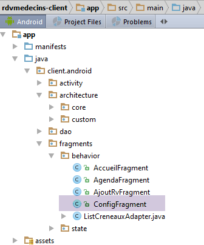
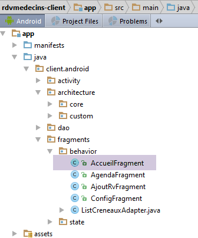

3. Caso práctico: gestión de citas
3.1. El proyecto
En el documento [Tutoriel AngularJS / Spring 4] se ha desarrollado una aplicación cliente/servidor para gestionar las citas médicas. A partir de ahora nos referiremos a este documento como [rdvmedecins-angular]. La aplicación tenía dos tipos de clientes:
- un cliente HTML / CSS / JS;
- un cliente para Android;
El cliente para Android se obtenía automáticamente a partir de la versión HTML del cliente con la herramienta [Cordova]. El objetivo de este proyecto será recrear este cliente para Android manualmente utilizando los conocimientos adquiridos en los capítulos anteriores.
Cabe destacar una diferencia importante entre ambas soluciones:
- la que vamos a crear solo se podrá utilizar en tabletas Android;
- en la versión [rdvmedecins-angular], el cliente web móvil (HTML / CSS / JS) se puede utilizar en cualquier plataforma (Android, IoS, Windows);
3.2. Las vistas del cliente de Android
Hay cuatro vistas.
Vista de configuración

Pantalla de selección del médico y de la fecha de la cita

Pantalla de selección de la franja horaria de la cita

Vista de la selección de la cita por parte del cliente

3.3. La arquitectura del proyecto
Contaremos con una arquitectura cliente/servidor similar a la del ejemplo [Exemple-15] (véase el apartado 1.16) de este documento:

Las comunicaciones asíncronas entre el cliente y el servidor se gestionarán mediante la biblioteca RxAndroid.
3.4. La base de datos
No desempeña un papel fundamental en este documento. La incluimos a título informativo. Se denominará [dbrdvmedecins] . Se trata de una base de datos MySQL5 con cuatro tablas:
 |
3.4.1. La tabla [MEDECINS]
Contiene información sobre los médicos gestionados por la aplicación [RdvMedecins].
 |  |
- ID: número que identifica al médico —clave primaria de la tabla
- VERSION: número que identifica la versión de la fila en la tabla. Este número se incrementa en 1 cada vez que se realiza una modificación en la fila.
- NOM: el apellido del médico
- PRENOM: su nombre
- TITRE: su tratamiento (Srta., Sra., Sr.)
3.4.2. La tabla [CLIENTS]
Los pacientes de los distintos médicos se registran en la tabla [CLIENTS]:
 |  |
- ID: número que identifica al cliente —clave primaria de la tabla
- VERSION: número que identifica la versión de la línea en la tabla. Este número se incrementa en 1 cada vez que se realiza una modificación en la línea.
- NOM: el nombre del cliente
- PRENOM: su nombre
- TITRE: su tratamiento (Srta., Sra., Sr.)
3.4.3. La tabla [CRENEAUX]
En ella se enumeran las franjas horarias en las que son posibles los RV:
 |
 |  |  |
- ID: número que identifica la franja horaria —clave primaria de la tabla (línea 8)
- VERSION: número que identifica la versión de la fila en la tabla. Este número se incrementa en 1 cada vez que se realiza una modificación en la fila.
- ID_MEDECIN: número que identifica al médico al que pertenece este horario – clave externa en la columna MEDECINS (ID).
- HDEBUT: hora de inicio de la franja horaria
- MDEBUT: minutos de inicio de la franja horaria
- HFIN: hora de finalización de la franja horaria
- MFIN: minutos de fin de franja
La segunda línea de la tabla [CRENEAUX] (véase [1] más arriba) indica, por ejemplo, que el turno n.º 2 comienza a las 8:20 y termina a las 8:40, y corresponde a la doctora n.º 1 (la Sra. Marie PELISSIER).
3.4.4. La tabla [RV]
En ella se enumeran los RV asignados a cada médico:
 |  |
- ID: número que identifica de forma única al RV – clave primaria
- JOUR: día del RV
- ID_CRENEAU: franja horaria del RV —clave externa en el campo [ID] de la tabla [CRENEAUX]—; determina tanto la franja horaria como el médico correspondiente.
- ID_CLIENT: número del cliente para el que se realiza la reserva – clave externa en el campo [ID] de la tabla [CLIENTS]
Esta tabla tiene una restricción de unicidad de e e sobre los valores de las columnas unidas (JOUR, ID_CRENEAU):
Si una fila de la tabla [RV] tiene el valor (JOUR1, ID_CRENEAU1) en las columnas (JOUR, ID_CRENEAU), dicho valor no puede aparecer en ningún otro lugar. De lo contrario, significaría que se han registrado dos RV al mismo tiempo para el mismo médico. Desde el punto de vista de la programación en Java, el controlador JDBC de la base de datos lanza un SQLException cuando se produce este caso.
La línea de id igual a 3 (véase [1] más arriba) significa que se ha reservado un RV para la franja horaria n.º 20 y el cliente n.º 4 el 23/08/2006. La tabla [CRENEAUX] nos indica que la franja n.º 20 corresponde al horario de 16:20 a 16:40 y pertenece a la médica n.º 1 (la Sra. Marie PELISSIER). La tabla [CLIENTS] nos indica que el cliente n.º 4 es la Srta. Brigitte BISTROU.
3.4.5. Creación de la base de datos
Para crear las tablas y rellenarlas, se puede utilizar el script [dbrdvmedecins.sql], que se encuentra en el archivo de ejemplos |ICI|.
 |
Con [WampServer] (véase el apartado 6.15), se puede proceder de la siguiente manera:
 |  |
- en [1], se hace clic en el icono de [WampServer] y se selecciona la opción [PhpMyAdmin] [2],
- en [3], en la ventana que se ha abierto, selecciona el enlace [Bases de données],
 |
- a [4-6], se importa un archivo SQL,
 |  |  |
- en [7], se selecciona el script SQL y en [8] se ejecuta,
- en [9], se han creado las tablas de la base de datos. Seguimos uno de los enlaces,
 |
- en [10], el contenido de la tabla.
A partir de ahora, no volveremos a referirnos a esta base de datos, pero invitamos al lector a seguir su evolución a lo largo de las pruebas, sobre todo cuando la aplicación no funcione.
3.5. El servidor web / jSON
Aquí nos centramos en el servidor [1]. No vamos a desarrollarlo. Se ha detallado en el documento [Spring MVC et Thymeleaf par l'exemple]. El lector interesado puede consultarlo. Se ha desarrollado igual que el del servidor del ejemplo 15. Su código fuente se incluye en los ejemplos. Aquí vamos a utilizar su binario:
 |
- [rdvmedecins-server-all-1.0.jar] es el binario del servidor;
3.5.1. Puesta en marcha
En una ventana de comandos, nos situamos en la carpeta que contiene el binario del servidor:
...\rdvmedecins>dir
Le volume dans le lecteur D s’appelle Données
Le numéro de série du volume est 7A34-AE5F
Répertoire de D:\data\istia-1516\projets\dvp-android-studio\rdvmedecins
09/06/2016 10:50 <DIR> .
09/06/2016 10:50 <DIR> ..
06/07/2014 16:36 7 631 dbrdvmedecins.sql
08/06/2016 16:31 <DIR> rdvmedecins-client
08/06/2016 16:22 <DIR> rdvmedecins-server
08/06/2016 16:23 29 618 709 rdvmedecins-server-all-1.0.jar
y, a continuación, para iniciar el servidor, se escribe el siguiente comando (SGBD y MySQL deben estar ya en ejecución):
...\rdvmedecins>java -jar rdvmedecins-server-all-1.0.jar
. ____ _ __ _ _
/\\ / ___'_ __ _ _(_)_ __ __ _ \ \ \ \
( ( )\___ | '_ | '_| | '_ \/ _` | \ \ \ \
\\/ ___)| |_)| | | | | || (_| | ) ) ) )
' |____| .__|_| |_|_| |_\__, | / / / /
=========|_|==============|___/=/_/_/_/
:: Spring Boot :: (v1.0)
10:55:48.617 [main] INFO rdvmedecins.boot.Boot - Starting Boot v1.0 on st-PC (D:\data\istia-1516\projets\dvp-android-studio\rdvmedecins\rdvmedecins-server-all-1.0.jar started by st in D:\data\istia-1516\projets\dvp-android-studio\rdvmedecins)
10:55:48.621 [main] INFO rdvmedecins.boot.Boot - No active profile set, falling back to default profiles: default
10:55:48.662 [main] INFO o.s.b.c.e.AnnotationConfigEmbeddedWebApplicationContext - Refreshing org.springframework.boot.context.embedded.AnnotationConfigEmbeddedWebApplicationContext@7085bdee: startup date [Thu Jun 09 10:55:48 CEST 2016]; root of context hierarchy
10:55:49.948 [main] INFO o.s.b.c.e.t.TomcatEmbeddedServletContainer - Tomcat initialized with port(s): 8080 (http)
juin 09, 2016 10:55:50 AM org.apache.catalina.core.StandardService startInternal
INFOS: Starting service Tomcat
juin 09, 2016 10:55:50 AM org.apache.catalina.core.StandardEngine startInternal
INFOS: Starting Servlet Engine: Apache Tomcat/8.0.33
juin 09, 2016 10:55:50 AM org.apache.catalina.core.ApplicationContext log
INFOS: Initializing Spring embedded WebApplicationContext
10:55:50.255 [localhost-startStop-1] INFO o.s.web.context.ContextLoader - Root
WebApplicationContext: initialization completed in 1596 ms
...
10:55:55.765 [localhost-startStop-1] INFO o.s.s.web.DefaultSecurityFilterChain
- Creating filter chain: ...]
10:55:55.785 [localhost-startStop-1] INFO o.s.b.c.e.ServletRegistrationBean - Mapping servlet: 'dispatcherServlet' to [/*]
10:55:55.791 [localhost-startStop-1] INFO o.s.b.c.e.FilterRegistrationBean - Mapping filter: 'springSecurityFilterChain' to: [/*]
...
10:55:56.249 [main] INFO o.s.w.s.m.m.a.RequestMappingHandlerMapping - Mapped "{[/getAllCreneaux/{idMedecin}],methods=[GET],produces=[application/json;charset=UTF-8]}" onto public java.lang.String rdvmedecins.controllers.RdvMedecinsController.getAllCreneaux(long,javax.servlet.http.HttpServletResponse,java.lang.String)
throws com.fasterxml.jackson.core.JsonProcessingException
10:55:56.252 [main] INFO o.s.w.s.m.m.a.RequestMappingHandlerMapping - Mapped "{[/getRvMedecinJour/{idMedecin}/{jour}],methods=[GET],produces=[application/json;charset=UTF-8]}" onto public java.lang.String rdvmedecins.controllers.RdvMedecinsController.getRvMedecinJour(long,java.lang.String,javax.servlet.http.HttpServletResponse,java.lang.String) throws com.fasterxml.jackson.core.JsonProcessingException
10:55:56.255 [main] INFO o.s.w.s.m.m.a.RequestMappingHandlerMapping - Mapped "{[/getCreneauById/{id}],methods=[GET],produces=[application/json;charset=UTF-8]}" onto public java.lang.String rdvmedecins.controllers.RdvMedecinsController.getCreneauById(long,javax.servlet.http.HttpServletResponse,java.lang.String) throws
com.fasterxml.jackson.core.JsonProcessingException
10:55:56.257 [main] INFO o.s.w.s.m.m.a.RequestMappingHandlerMapping - Mapped "{[/ajouterRv],methods=[POST],consumes=[application/json;charset=UTF-8],produces=[application/json;charset=UTF-8]}" onto public java.lang.String rdvmedecins.controllers.RdvMedecinsController.ajouterRv(rdvmedecins.models.PostAjouterRv,javax.servlet.http.HttpServletResponse,java.lang.String) throws com.fasterxml.jackson.core.JsonProcessingException
10:55:56.259 [main] INFO o.s.w.s.m.m.a.RequestMappingHandlerMapping - Mapped "{[/getAllClients],methods=[GET],produces=[application/json;charset=UTF-8]}" onto
public java.lang.String rdvmedecins.controllers.RdvMedecinsController.getAllClients(javax.servlet.http.HttpServletResponse,java.lang.String) throws com.fasterxml.jackson.core.JsonProcessingException
10:55:56.261 [main] INFO o.s.w.s.m.m.a.RequestMappingHandlerMapping - Mapped "{[/getClientById/{id}],methods=[GET],produces=[application/json;charset=UTF-8]}"
onto public java.lang.String rdvmedecins.controllers.RdvMedecinsController.getClientById(long,javax.servlet.http.HttpServletResponse,java.lang.String) throws com.fasterxml.jackson.core.JsonProcessingException
10:55:56.264 [main] INFO o.s.w.s.m.m.a.RequestMappingHandlerMapping - Mapped "{[/getMedecinById/{id}],methods=[GET],produces=[application/json;charset=UTF-8]}" onto public java.lang.String rdvmedecins.controllers.RdvMedecinsController.getMedecinById(long,javax.servlet.http.HttpServletResponse,java.lang.String) throws com.fasterxml.jackson.core.JsonProcessingException
10:55:56.266 [main] INFO o.s.w.s.m.m.a.RequestMappingHandlerMapping - Mapped "{[/getRvById/{id}],methods=[GET],produces=[application/json;charset=UTF-8]}" onto public java.lang.String rdvmedecins.controllers.RdvMedecinsController.getRvById(long,javax.servlet.http.HttpServletResponse,java.lang.String) throws com.fasterxml.jackson.core.JsonProcessingException
10:55:56.268 [main] INFO o.s.w.s.m.m.a.RequestMappingHandlerMapping - Mapped "{[/getAllMedecins],methods=[GET],produces=[application/json;charset=UTF-8]}" onto public java.lang.String rdvmedecins.controllers.RdvMedecinsController.getAllMedecins(javax.servlet.http.HttpServletResponse,java.lang.String) throws com.fasterxml.jackson.core.JsonProcessingException
10:55:56.270 [main] INFO o.s.w.s.m.m.a.RequestMappingHandlerMapping - Mapped "{[/supprimerRv],methods=[POST],consumes=[application/json;charset=UTF-8],produces=[application/json;charset=UTF-8]}" onto public java.lang.String rdvmedecins.controllers.RdvMedecinsController.supprimerRv(rdvmedecins.models.PostSupprimerRv,javax.servlet.http.HttpServletResponse,java.lang.String) throws com.fasterxml.jackson.core.JsonProcessingException
10:55:56.273 [main] INFO o.s.w.s.m.m.a.RequestMappingHandlerMapping - Mapped "{[/authenticate],methods=[GET],produces=[application/json;charset=UTF-8]}" onto public java.lang.String rdvmedecins.controllers.RdvMedecinsController.authenticate(javax.servlet.http.HttpServletResponse,java.lang.String) throws com.fasterxml.jackson.core.JsonProcessingException
10:55:56.276 [main] INFO o.s.w.s.m.m.a.RequestMappingHandlerMapping - Mapped "{[/getAgendaMedecinJour/{idMedecin}/{jour}],methods=[GET],produces=[application/json;charset=UTF-8]}" onto public java.lang.String rdvmedecins.controllers.RdvMedecinsController.getAgendaMedecinJour(long,java.lang.String,javax.servlet.http.HttpServletResponse,java.lang.String) throws com.fasterxml.jackson.core.JsonProcessingException
...
10:55:56.681 [main] INFO o.s.b.c.e.t.TomcatEmbeddedServletContainer - Tomcat started on port(s): 8080 (http)
10:55:56.686 [main] INFO rdvmedecins.boot.Boot - Started Boot in 8.231 seconds
El servidor muestra numerosos registros. Arriba solo hemos destacado los que resultan útiles para comprender el proceso:
- líneas 14-18: se inicia un servidor Tomcat integrado en el puerto 8080 del equipo. Este servidor es el que ejecuta la aplicación web de gestión de citas. Esta aplicación es, de hecho, un servicio web / jSON: se le envían solicitudes a través de URL y responde enviando una cadena jSON;
- línea 24: el servicio web está protegido con el marco [Spring Security]. Se accede a las URL del servicio web tras autenticarse;
- líneas 29-44: los URL expuestos por el servicio web;
Vamos a detallar estas últimas.
3.5.2. Seguridad del servicio web
Los URL expuestos por el servicio web están protegidos. El servidor espera en la solicitud HTTP del cliente el siguiente encabezado:
El código esperado es la codificación en base64 [http://fr.wikipedia.org/wiki/Base64] de la cadena «usuario:contraseña». El servicio web, en su estado inicial, solo acepta un usuario «admin» con la contraseña «admin». El encabezado anterior se convierte, para este usuario concreto, en la siguiente línea:
Para poder enviar este encabezado HTTP, utilizamos el cliente HTTP [Advanced Rest Client], que es un complemento del navegador Chrome (véase el apartado 6.13). Vamos a probar manualmente los diferentes URL que expone el servicio web para comprender:
- los parámetros que espera el URL;
- la naturaleza exacta de su respuesta;
3.5.3. Lista de médicos
El código URL [/getAllMedecins] permite obtener la lista de médicos:
 |
- en [1], la consulta URL;
- en [2], el método HTTP utilizado para esta consulta;
- en [3], el encabezado de seguridad del usuario (admin, admin) HTTP;
- en [4], se envía la solicitud HTTP;
La respuesta del servidor es la siguiente:
 |
- en [5], la respuesta jSON del servidor, formateada;
 |
- en [6], la misma respuesta en formato sin procesar;
El formato [5] permite ver mejor la estructura de la respuesta. Todas las respuestas del servicio web son una instancia de la siguiente clase [Response]:
package rdvmedecins.android.dao.service;
import java.util.List;
public class Response<T> {
// ----------------- propiedades
// estado de la operación
private int status;
// posibles mensajes de error
private List<String> messages;
// el cuerpo de la respuesta
private T body;
// constructores
public Response() {
}
public Response(int status, List<String> messages, T body) {
this.status = status;
this.messages = messages;
this.body = body;
}
// getters y setters
...
}
- línea 9: el estado de la respuesta. El valor 0 significa que no se ha producido ningún error; en caso contrario, se ha producido un error;
- línea 11: una lista de mensajes de error si se ha producido algún error;
- línea 13: la respuesta que realmente esperaba el cliente;
La respuesta a URL [/getAllMedecins] es la cadena jSON de un objeto de tipo [Response<List<Medecin>>]. La clase [Medecin] es la siguiente:
package rdvmedecins.android.dao.entities;
public class Medecin extends Personne {
// constructor por defecto
public Medecin() {
}
// constructor con parámetros
public Medecin(String titre, String nom, String prenom) {
super(titre, nom, prenom);
}
public String toString() {
return String.format("Medecin[%s]", super.toString());
}
}
En la línea 3, la clase [Medecin] hereda de la siguiente clase [Personne]:
package rdvmedecins.android.dao.entities;
public class Personne extends AbstractEntity {
// atributos de una persona
private String titre;
private String nom;
private String prenom;
// constructor por defecto
public Personne() {
}
// constructor con parámetros
public Personne(String titre, String nom, String prenom) {
this.titre = titre;
this.nom = nom;
this.prenom = prenom;
}
// toString
public String toString() {
return String.format("Personne[%s, %s, %s, %s, %s]", id, version, titre, nom, prenom);
}
// métodos getter y setter
...
}
En la línea 3, la clase [Personne] hereda de la siguiente clase [AbstractEntity]:
package rdvmedecins.android.dao.entities;
import java.io.Serializable;
public class AbstractEntity implements Serializable {
private static final long serialVersionUID = 1L;
protected Long id;
protected Long version;
@Override
public int hashCode() {
int hash = 0;
hash += (id != null ? id.hashCode() : 0);
return hash;
}
// inicialización
public AbstractEntity build(Long id, Long version) {
this.id = id;
this.version = version;
return this;
}
@Override
public boolean equals(Object entity) {
String class1 = this.getClass().getName();
String class2 = entity.getClass().getName();
if (!class2.equals(class1)) {
return false;
}
AbstractEntity other = (AbstractEntity) entity;
return this.id == other.id;
}
// getters y setters
...
}
En definitiva, la estructura de un objeto [Medecin] es la siguiente:
[Long id; Long version; String titre; String nom; String prenom;]
y la de [Response<List<Medecin>>] es la siguiente:
A partir de ahora, utilizaremos estas definiciones abreviadas para describir la respuesta del servidor. Por otra parte, durante un tiempo, ya no mostraremos capturas de pantalla. Basta con repetir lo que acabamos de ver. Volveremos a las capturas de pantalla cuando sea necesario realizar una consulta POST. También presentaremos un ejemplo de ejecución con el siguiente formato:
3.5.4. Lista de clientes
| |
|
Ejemplo:
3.5.5. Lista de franjas horarias de un médico
|
- [idMedecin]: identificador del médico cuyos horarios de consulta se desean consultar;
- [hdebut]: hora de inicio de la consulta;
- [mdebut]: minutos de inicio de la consulta;
- [hfin]: hora de finalización de la consulta;
- [mfin]: minutos de finalización de la consulta;
Para un intervalo entre las 10:20 y las 10:40, tendremos [hdebut, mdebut, hfin, mfin]=[10, 20, 10, 40].
Ejemplo:
3.5.6. Lista de citas de un médico
|
- [idMedecin]: identificador del médico cuyas citas se desean consultar;
- URL [jour]: día de las citas en el formato «aaaa-mm-dd»;
- Respuesta [jour]: lo mismo, pero en formato de fecha Java;
- [client]: el cliente de la cita. Su estructura se ha descrito anteriormente;
- [idClient]: el identificador del cliente;
- [creneau]: la franja horaria de la cita. Su estructura se ha descrito anteriormente;
- [idCreneau]: el identificador de la franja horaria;
Ejemplo:
3.5.7. La agenda de un médico
|
- [idMedecin]: identificador del médico cuyas citas se desean consultar;
- URL [jour]: día de las citas en el formato «aaaa-mm-dd»;
- [agenda]: agenda del médico;
- [medecin]: el médico en cuestión. Su estructura se ha definido anteriormente;
- Respuesta [jour]: el día de la agenda en formato de fecha Java;
- [creneauxMedecinJour]: una matriz de elementos de tipo [CreneauMedecinJour];
- [creneau]: una franja horaria. Su estructura se ha descrito anteriormente;
- [rv]: una cita. Su estructura se ha descrito anteriormente;
Ejemplo:
|
Se ha destacado el caso en el que hay una cita en la franja horaria y el caso en el que no la hay.
3.5.8. Buscar un médico por su identificador
|
- [idMedecin]: el identificador del médico;
Ejemplo 1:
Ejemplo 2:
3.5.9. Obtener un cliente por su identificador
|
- [idClient]: el identificador del cliente;
Ejemplo 1:
Ejemplo 2:
3.5.10. Obtener una franja horaria mediante su identificador
|
- [idCreneau]: el identificador de la franja horaria;
Ejemplo 1:
Cabe destacar que en la respuesta no aparece el nombre del médico titular de la franja horaria, sino únicamente su identificador.
Ejemplo 2:
3.5.11. Concertar una cita con su identificador
|
- [idRv]: el identificador de la cita;
Ejemplo 1:
Cabe destacar que en la respuesta no aparecen ni el cliente ni la franja horaria de la cita, sino únicamente sus identificadores.
Ejemplo 2:
3.5.12. Añadir una cita
La URL [/ajouterRv] permite añadir una cita. La información necesaria para esta acción (el día, la franja horaria y el cliente) se transmite mediante una solicitud HTTP POST. A continuación, mostramos cómo realizar esta solicitud con la herramienta [Advanced Rest Client].

- en [1], se consulta la URL;
- en [2], es consultada por un POST;
- en [3-4], se indica al servidor que los valores que se le envían se hacen en forma de cadena jSON;
- en [4], el encabezado HTTP de la autenticación;
- en [5], la información transmitida por el POST. Se trata de una cadena jSON que contiene:
- [jour]: el día de la cita en el formato «aaaa-mm-dd»,
- [idClient]: el identificador del cliente para el que se ha concertado la cita,
- [idCreneau]: el identificador de la franja horaria de la cita. Dado que una franja horaria pertenece a un médico concreto, con ello también se designa al médico;
- en [6], se envía la solicitud;
La cadena jSON que se envía es la del objeto de tipo [PostAjouterRv] siguiente:
public class PostAjouterRv {
// datos de la entrada
private String jour;
private long idClient;
private long idCreneau;
// constructores
public PostAjouterRv() {
}
public PostAjouterRv(String jour, long idCreneau, long idClient) {
this.jour = jour;
this.idClient = idClient;
this.idCreneau = idCreneau;
}
// getter y setter
...
}
La respuesta del servidor es del tipo [Response<Rv>] [int status; List<String> messages; Rv rv], donde [rv] es la cita añadida.
La respuesta del servidor a la solicitud anterior es la siguiente:
 |
Cabe señalar que, en el ejemplo anterior, algunos datos no aparecen en [idClient, idCreneau], pero se encuentran en los campos [client] y [creneau]. La información importante es el identificador de la cita añadida (209). El servicio web podría haberse limitado a devolver únicamente esta información.
3.5.13. Eliminar una cita
Esta operación también se realiza mediante un POST:
|
El valor publicado es la cadena jSON de un objeto de tipo [PostSupprimerRv] como se indica a continuación:
public class PostSupprimerRv {
// Datos del post
private long idRv;
// constructores
public PostSupprimerRv() {
}
public PostSupprimerRv(long idRv) {
this.idRv = idRv;
}
// getter y setter
...
}
- línea 4, [idRv] es el identificador de la cita que se va a eliminar.
Ejemplo 1:
La cita n.º 209 se ha eliminado correctamente debido a [status=0].
Ejemplo 2:
3.6. El cliente de Android
Ahora que el servidor [1] se ha detallado y está operativo, vamos a estudiar el cliente Android [2].
3.6.1. Arquitectura del proyecto en Android Studio
El proyecto sigue la arquitectura del proyecto [client-android-skel] (véase el apartado 1.17). En la arquitectura anterior del cliente de Android, se distinguen tres bloques:
- la capa [DAO], encargada de la comunicación con el servicio web;
- las [vues], encargadas de la comunicación con el usuario;
- la [activité], que actúa como enlace entre los dos bloques anteriores. Las vistas no tienen conocimiento de la capa [DAO]. Solo se comunican con la actividad.
Esta arquitectura se refleja en la del proyecto de Android Studio del cliente Android:
 |
- el paquete [activity] implementa la actividad;
- el paquete [architecture] recoge los elementos de arquitectura que hemos desarrollado anteriormente;
- el paquete [dao] implementa la capa [DAO];
- el paquete [fragments] implementa los [vues];
3.6.2. Personalización del proyecto
 |
La carpeta [architecture / custom] contiene los elementos personalizables de la arquitectura.
La interfaz [IMainActivity] es la siguiente:
package client.android.architecture.custom;
import client.android.architecture.core.ISession;
import client.android.dao.service.IDao;
public interface IMainActivity extends IDao {
// acceso a la sesión
ISession getSession();
// cambio de vista
void navigateToView(int position, ISession.Action action);
// gestión de la espera
void beginWaiting();
void cancelWaiting();
// constantes de la aplicación -------------------------------------
// modo de depuración
boolean IS_DEBUG_ENABLED = true;
// tiempo máximo de espera de la respuesta del servidor
int TIMEOUT = 1000;
// tiempo de espera antes de ejecutar la solicitud del cliente
int DELAY = 000;
// autenticación básica
boolean IS_BASIC_AUTHENTIFICATION_NEEDED = true;
// adyacencia de fragmentos
int OFF_SCREEN_PAGE_LIMIT = 1;
// barra de pestañas
boolean ARE_TABS_NEEDED = false;
// imagen de espera
boolean IS_WAITING_ICON_NEEDED = true;
// número de fragmentos de la aplicación
int FRAGMENTS_COUNT = 4;
// número de visitas
int VUE_CONFIG = 0;
int VUE_ACCUEIL = 1;
int VUE_AGENDA = 2;
int VUE_AJOUT_RV = 3;
}
- líneas 25 y 28: personalización de la capa [DAO];
- línea 31: esta aplicación realiza accesos autenticados al servidor;
- línea 40: se necesita una imagen de espera;
- línea 43: la aplicación tiene cuatro fragmentos;
- líneas 46-49: los números de los cuatro fragmentos;
- línea 37: no hay pestañas;
La clase base [CoreState] de los estados de los fragmentos será la siguiente:
package client.android.architecture.custom;
import client.android.architecture.core.MenuItemState;
import client.android.fragments.state.AccueilFragmentState;
import client.android.fragments.state.AgendaFragmentState;
import client.android.fragments.state.AjoutRvFragmentState;
import client.android.fragments.state.ConfigFragmentState;
import com.fasterxml.jackson.annotation.JsonIgnoreProperties;
import com.fasterxml.jackson.annotation.JsonSubTypes;
import com.fasterxml.jackson.annotation.JsonTypeInfo;
@JsonIgnoreProperties(ignoreUnknown = true)
@JsonTypeInfo(use = JsonTypeInfo.Id.NAME, include = JsonTypeInfo.As.PROPERTY)
@JsonSubTypes({
@JsonSubTypes.Type(value = AccueilFragmentState.class),
@JsonSubTypes.Type(value = AgendaFragmentState.class),
@JsonSubTypes.Type(value = AjoutRvFragmentState.class),
@JsonSubTypes.Type(value = ConfigFragmentState.class)
}
)
public class CoreState {
// fragmento visitado o no
protected boolean hasBeenVisited = false;
// estado del posible menú del fragmento
protected MenuItemState[] menuOptionsState;
// getters y setters
...
}
- líneas 15-18: los cuatro fragmentos tienen un estado:
 |
Por último, la sesión contiene los datos compartidos entre fragmentos:
package client.android.architecture.custom;
import client.android.architecture.core.AbstractSession;
import client.android.dao.entities.AgendaMedecinJour;
import client.android.dao.entities.Client;
import client.android.dao.entities.Medecin;
import client.android.fragments.state.AccueilFragmentState;
import client.android.fragments.state.AgendaFragmentState;
import client.android.fragments.state.AjoutRvFragmentState;
import client.android.fragments.state.ConfigFragmentState;
import java.util.List;
public class Session extends AbstractSession {
// los elementos que no se pueden serializar en jSON deben llevar la anotación @JsonIgnore
// lista de médicos
private List<Medecin> médecins;
// lista de clientes
private List<Client> clients;
// agenda de un médico para un día determinado
private AgendaMedecinJour agenda;
// posición del elemento seleccionado en la agenda
private int position;
// día de la cita en formato inglés «yyyy-MM-dd»
private String dayRv;
// día de la cita en formato francés «dd-MM-yyyy»
private String jourRv;
// getters y setters
...
}
- líneas 17-28: la sesión almacena seis datos. Explicaremos la función de cada uno de ellos cuando sea necesario.
3.6.3. La capa [DAO]
 |
 |  |
- en [1], las entidades encapsuladas en las respuestas del servidor. Se han presentado en el apartado 3.5;
- en [2], los elementos del cliente que gestionan los intercambios con el servidor;
No vamos a volver sobre los elementos [1]. Ya se han presentado. Se invita al lector a volver al apartado 3.5 si es necesario. Vamos a estudiar la implementación del paquete [service]. Esto nos llevará a hablar también de la implementación de las comunicaciones seguras entre el cliente y el servidor.
3.6.3.1. Implementación de las comunicaciones cliente/servidor
 |
La clase [WebClient] es un componente de AA que describe:
- los URL expuestos por el servicio web;
- sus parámetros;
- sus respuestas;
package rdvmedecins.android.dao.service;
import rdvmedecins.android.dao.entities.*;
import org.androidannotations.rest.spring.annotations.*;
import org.androidannotations.rest.spring.api.RestClientRootUrl;
import org.androidannotations.rest.spring.api.RestClientSupport;
import org.springframework.http.converter.json.MappingJackson2HttpMessageConverter;
import org.springframework.web.client.RestTemplate;
import java.util.List;
@Rest(converters = {MappingJackson2HttpMessageConverter.class})
public interface WebClient extends RestClientRootUrl, RestClientSupport {
// RestTemplate
public void setRestTemplate(RestTemplate restTemplate);
// lista de médicos
@Get("/getAllMedecins")
public Response<List<Medecin>> getAllMedecins();
// lista de clientes
@Get("/getAllClients")
public Response<List<Client>> getAllClients();
// lista de franjas horarias de un médico
@Get("/getAllCreneaux/{idMedecin}")
public Response<List<Creneau>> getAllCreneaux(@Path long idMedecin);
// lista de citas de un médico
@Get("/getRvMedecinJour/{idMedecin}/{jour}")
public Response<List<Rv>> getRvMedecinJour(@Path long idMedecin, @Path String jour);
// Cliente
@Get("/getClientById/{id}")
public Response<Client> getClientById(@Path long id);
// Médico
@Get("/getMedecinById/{id}")
public Response<Medecin> getMedecinById(@Path long id);
// Cita
@Get("/getRvById/{id}")
public Response<Rv> getRvById(@Path long id);
// Franja horaria
@Get("/getCreneauById/{id}")
public Response<Creneau> getCreneauById(@Path long id);
// Añadir un RV
@Post("/ajouterRv")
public Response<Rv> ajouterRv(@Body PostAjouterRv post);
// eliminar una cita
@Post("/supprimerRv")
public Response<Rv> supprimerRv(@Body PostSupprimerRv post);
// Obtener la agenda de un médico
@Get(value = "/getAgendaMedecinJour/{idMedecin}/{jour}")
public Response<AgendaMedecinJour> getAgendaMedecinJour(@Path long idMedecin, @Path String jour);
}
- líneas 19-60: aquí se recogen todos los URL analizados en el apartado 3.5;
- línea 16: el componente [RestTemplate] de [Spring Android] en el que se basa la comunicación cliente/servidor;
3.6.3.2. La interfaz [IDao]
 |
La interfaz [IDao] de la capa [DAO] es la siguiente:
package rdvmedecins.android.dao.service;
import rdvmedecins.android.dao.entities.*;
import rx.Observable;
import java.util.List;
public interface IDao {
// URL del servicio web
public void setUrlServiceWebJson(String url);
// usuario
public void setUser(String user, String mdp);
// tiempo de espera del cliente
public void setTimeout(int timeout);
// Lista de clientes
public Observable<List<Client>> getAllClients();
// Lista de médicos
public Observable<List<Medecin>> getAllMedecins();
// Lista de franjas horarias de un médico
public Observable<List<Creneau>> getAllCreneaux(long idMedecin);
// lista de citas de un médico en un día determinado
public Observable<List<Rv>> getRvMedecinJour(long idMedecin, String jour);
// buscar un cliente identificado por su ID
public Observable<Client> getClientById(long id);
// buscar un médico identificado por su ID
public Observable<Medecin> getMedecinById(long id);
// buscar una cita identificada por su ID
public Observable<Rv> getRvById(long id);
// buscar una franja horaria identificada por su ID
public Observable<Creneau> getCreneauById(long id);
// añadir un RV
public Observable<Rv> ajouterRv(String jour, long idCreneau, long idClient);
// eliminar un RV
public Observable<Rv> supprimerRv(long idRv);
// profesión
public Observable<AgendaMedecinJour> getAgendaMedecinJour(long idMedecin, String jour);
// modo de depuración
void setDebugMode(boolean isDebugEnabled);
}
- línea 10: para establecer el URL del servicio web / jSON;
- línea 13: para configurar el usuario de la comunicación cliente/servidor. [user] es el identificador del usuario, [mdp] su contraseña;
- línea 16: para establecer un tiempo de espera máximo para la respuesta del servidor;
- líneas 18-49: a cada URL expuesto por el servicio web le corresponde un método. Estos métodos adoptan la firma de los métodos del mismo nombre del componente AA [WebClient];
- línea 52: para controlar el modo debug de la capa [DAO];
3.6.3.3. La clase [Dao]
 |
La implementación [DAO] de la interfaz [IDao] anterior es la siguiente:
package client.android.dao.service;
import android.util.Log;
import client.android.dao.entities.*;
import org.androidannotations.annotations.AfterInject;
import org.androidannotations.annotations.Bean;
import org.androidannotations.annotations.EBean;
import org.androidannotations.rest.spring.annotations.RestService;
import org.springframework.http.client.ClientHttpRequestInterceptor;
import org.springframework.http.client.SimpleClientHttpRequestFactory;
import org.springframework.http.converter.json.MappingJackson2HttpMessageConverter;
import org.springframework.web.client.RestTemplate;
import rx.Observable;
import java.util.ArrayList;
import java.util.List;
@EBean(scope = EBean.Scope.Singleton)
public class Dao extends AbstractDao implements IDao {
// cliente del servicio web
@RestService
protected WebClient webClient;
// seguridad
@Bean
protected MyAuthInterceptor authInterceptor;
// el RestTemplate
private RestTemplate restTemplate;
// fábrica de RestTemplate
private SimpleClientHttpRequestFactory factory;
@AfterInject
public void afterInject() {
...
}
@Override
public void setUrlServiceWebJson(String url) {
...
}
@Override
public void setUser(String user, String mdp) {
...
}
@Override
public void setTimeout(int timeout) {
...
}
@Override
public void setBasicAuthentification(boolean isBasicAuthentificationNeeded) {
if (isDebugEnabled) {
Log.d(className, String.format("setBasicAuthentification thread=%s, isBasicAuthentificationNeeded=%s", Thread.currentThread().getName(), isBasicAuthentificationNeeded));
}
// ¿Interceptor de autenticación?
if (isBasicAuthentificationNeeded) {
// se añade el interceptor de autenticación
List<ClientHttpRequestInterceptor> interceptors = new ArrayList<ClientHttpRequestInterceptor>();
interceptors.add(authInterceptor);
restTemplate.setInterceptors(interceptors);
}
}
// métodos privados -------------------------------------------------
private void log(String message) {
if (isDebugEnabled) {
Log.d(className, message);
}
}
// Implementación de la interfaz IDao --------------------------------------------------------------------
@Override
public Observable<Response<List<Client>>> getAllClients() {
// registro
log("getAllClients");
// resultado
return getResponse(new IRequest<Response<List<Client>>>() {
@Override
public Response<List<Client>> getResponse() {
return webClient.getAllClients();
}
});
}
@Override
public Observable<Response<List<Medecin>>> getAllMedecins() {
// registro
log("getAllMedecins");
// resultado
return getResponse(new IRequest<Response<List<Medecin>>>() {
@Override
public Response<List<Medecin>> getResponse() {
return webClient.getAllMedecins();
}
});
}
@Override
public Observable<Response<List<Creneau>>> getAllCreneaux(final long idMedecin) {
// registro
log("getAllCreneaux");
// resultado
return getResponse(new IRequest<Response<List<Creneau>>>() {
@Override
public Response<List<Creneau>> getResponse() {
return webClient.getAllCreneaux(idMedecin);
}
});
}
@Override
public Observable<Response<List<Rv>>> getRvMedecinJour(final long idMedecin, final String jour) {
// registro
log("getRvMedecinJour");
// resultado
return getResponse(new IRequest<Response<List<Rv>>>() {
@Override
public Response<List<Rv>> getResponse() {
return webClient.getRvMedecinJour(idMedecin, jour);
}
});
}
@Override
public Observable<Response<Client>> getClientById(final long id) {
// registro
log("getClientById");
// resultado
return getResponse(new IRequest<Response<Client>>() {
@Override
public Response<Client> getResponse() {
return webClient.getClientById(id);
}
});
}
@Override
public Observable<Response<Medecin>> getMedecinById(final long id) {
// registro
log("getMedecinById");
// resultado
return getResponse(new IRequest<Response<Medecin>>() {
@Override
public Response<Medecin> getResponse() {
return webClient.getMedecinById(id);
}
});
}
@Override
public Observable<Response<Rv>> getRvById(final long id) {
// registro
log("getRvById");
// resultado
return getResponse(new IRequest<Response<Rv>>() {
@Override
public Response<Rv> getResponse() {
return webClient.getRvById(id);
}
});
}
@Override
public Observable<Response<Creneau>> getCreneauById(final long id) {
// registro
log("getCreneauById");
// resultado
return getResponse(new IRequest<Response<Creneau>>() {
@Override
public Response<Creneau> getResponse() {
return webClient.getCreneauById(id);
}
});
}
@Override
public Observable<Response<Rv>> ajouterRv(final String jour, final long idCreneau, final long idClient) {
// registro
log("ajouterRv");
// resultado
return getResponse(new IRequest<Response<Rv>>() {
@Override
public Response<Rv> getResponse() {
return webClient.ajouterRv(new PostAjouterRv(jour, idCreneau, idClient));
}
});
}
@Override
public Observable<Response<Rv>> supprimerRv(final long idRv) {
// registro
log("supprimerRv");
// resultado
return getResponse(new IRequest<Response<Rv>>() {
@Override
public Response<Rv> getResponse() {
return webClient.supprimerRv(new PostSupprimerRv(idRv));
}
});
}
@Override
public Observable<Response<AgendaMedecinJour>> getAgendaMedecinJour(final long idMedecin, final String jour) {
// registro
log("getAgendaMedecinJour");
// resultado
return getResponse(new IRequest<Response<AgendaMedecinJour>>() {
@Override
public Response<AgendaMedecinJour> getResponse() {
return webClient.getAgendaMedecinJour(idMedecin, jour);
}
});
}
}
- líneas 18-72: son las que aparecen de forma predeterminada en la clase [Dao] del proyecto [client-android-skel];
- líneas 74-216: implementación de la interfaz [IDao]. Los métodos que consultan los URL expuestos por el servicio web delegan esta consulta al componente AA [WebClient] (líneas 22-23);
- líneas 58-63: si las comunicaciones entre el cliente y el servidor se autentican mediante una autorización de tipo básico, se añade un interceptor al componente [RestTemplate]. Esto hará que cualquier solicitud HTTP emitida por el componente [RestTemplate] sea interceptada por la clase [MyAuthInterceptor] (líneas 25-26);
La clase [MyAuthInterceptor] es la siguiente:
package rdvmedecins.android.dao.security;
import org.androidannotations.annotations.Bean;
import org.androidannotations.annotations.EBean;
import org.springframework.http.HttpAuthentication;
import org.springframework.http.HttpBasicAuthentication;
import org.springframework.http.HttpHeaders;
import org.springframework.http.HttpRequest;
import org.springframework.http.client.ClientHttpRequestExecution;
import org.springframework.http.client.ClientHttpRequestInterceptor;
import org.springframework.http.client.ClientHttpResponse;
import java.io.IOException;
@EBean(scope = EBean.Scope.Singleton)
public class MyAuthInterceptor implements ClientHttpRequestInterceptor {
// usuario
private String user;
private String mdp;
public ClientHttpResponse intercept(HttpRequest request, byte[] body, ClientHttpRequestExecution execution) throws IOException {
HttpHeaders headers = request.getHeaders();
HttpAuthentication auth = new HttpBasicAuthentication(user, mdp);
headers.setAuthorization(auth);
return execution.execute(request, body);
}
public void setUser(String user, String mdp) {
this.user = user;
this.mdp = mdp;
}
}
- línea 15: la clase [MyAuthInterceptor] es un componente AA de tipo [singleton];
- línea 16: la clase [MyAuthInterceptor] extiende la interfaz Spring [ClientHttpRequestInterceptor]. Esta interfaz tiene un método, el método [intercept] de la línea 22. Se amplía esta interfaz para interceptar cualquier solicitud HTTP del cliente. El método [intercept] recibe tres parámetros;
- [HtpRequest request]: la solicitud HTTP interceptada,
- [byte[] body]: su cuerpo, si lo tiene (por ejemplo, valores enviados mediante POST),
- [ClientHttpRequestExecution execution]: el componente Spring que ejecuta la solicitud;
Interceptamos todas las solicitudes HTTP del cliente Android para añadirles el encabezado de autenticación HTTP presentado en el apartado 3.5.
- línea 23: recuperamos los encabezados HTTP de la solicitud interceptada;
- línea 24: creamos el encabezado de autenticación HTTP. El método de autenticación utilizado (codificación base64 de la cadena «user:mdp») lo proporciona la clase Spring [HttpBasicAuthentication];
- línea 25: el encabezado de autenticación que acabamos de crear se añade a los encabezados actuales de la solicitud interceptada;
- línea 26: se continúa con la ejecución de la solicitud interceptada. En resumen, la solicitud interceptada se ha enriquecido con el encabezado de autenticación;
Las implementaciones de los métodos de la interfaz [IDao] siguen todas el mismo modelo. Tomemos como ejemplo el método [getAgendaMedecinJour]:
@Override
public Observable<Response<AgendaMedecinJour>> getAgendaMedecinJour(final long idMedecin, final String jour) {
// registro
log("getAgendaMedecinJour");
// resultado
return getResponse(new IRequest<Response<AgendaMedecinJour>>() {
@Override
public Response<AgendaMedecinJour> getResponse() {
return webClient.getAgendaMedecinJour(idMedecin, jour);
}
});
}
- línea 2: el método espera dos parámetros:
- [idMedecin]: el identificador del médico cuya agenda se desea consultar;
- [jour]: el día para el que se desea consultar la agenda;
- línea 6: se invoca el método [getResponse] de la clase padre [AbstractDao]. Este método espera un parámetro de tipo [IRequest<T>], donde T es el tipo devuelto por el método [getAgendaMedecinJour] de la línea 2, en este caso [Response<AgendaMedecinJour>]. La interfaz [IRequest] solo tiene un método: [getResponse] (línea 8);
- líneas 8-10: implementación del método [IRequest.getResponse]. Este método debe devolver el resultado esperado por el método [getAgendaMedecinJour] de la línea 2, de tipo [Response<AgendaMedecinJour>];
- línea 9: la respuesta la devuelve el método [webClient.getAgendaMedecinJour]:
// consultar la agenda de un médico
@Get(value = "/getAgendaMedecinJour/{idMedecin}/{jour}")
Response<AgendaMedecinJour> getAgendaMedecinJour(@Path long idMedecin, @Path String jour);
Los parámetros utilizados en la línea 9 son los que se pasan al método [getAgendaMedecinJour] en la línea 2. Por este motivo, dichos parámetros deben tener el atributo final;
3.6.4. La actividad [MainActivity]
Serveur  |
 |
La clase [MainActivity] es la siguiente:
package client.android.activity;
import android.util.Log;
import client.android.architecture.core.AbstractActivity;
import client.android.architecture.core.AbstractFragment;
import client.android.architecture.custom.IMainActivity;
import client.android.dao.entities.*;
import client.android.dao.service.Dao;
import client.android.dao.service.IDao;
import client.android.dao.service.Response;
import client.android.fragments.behavior.AccueilFragment_;
import client.android.fragments.behavior.AgendaFragment_;
import client.android.fragments.behavior.AjoutRvFragment_;
import client.android.fragments.behavior.ConfigFragment_;
import org.androidannotations.annotations.Bean;
import org.androidannotations.annotations.EActivity;
import rx.Observable;
import java.util.List;
@EActivity
public class MainActivity extends AbstractActivity {
// capa [DAO]
@Bean(Dao.class)
protected IDao dao;
// clase de padres ---------------------------------------
@Override
protected void onCreateActivity() {
// registro
if (IS_DEBUG_ENABLED) {
Log.d(className, "onCreateActivity");
}
}
@Override
protected IDao getDao() {
return dao;
}
@Override
protected AbstractFragment[] getFragments() {
AbstractFragment[] fragments= new AbstractFragment[]{new ConfigFragment_(), new AccueilFragment_(), new AgendaFragment_(), new AjoutRvFragment_()};
return fragments;
}
@Override
protected CharSequence getFragmentTitle(int position) {
return null;
}
@Override
protected void navigateOnTabSelected(int position) {
}
@Override
protected int getFirstView() {
return IMainActivity.VUE_CONFIG;
}
// interfaz IDao -----------------------------------------------------
...
@Override
public Observable<Response<List<Client>>> getAllClients() {
return dao.getAllClients();
}
@Override
public Observable<Response<List<Medecin>>> getAllMedecins() {
return dao.getAllMedecins();
}
@Override
public Observable<Response<List<Creneau>>> getAllCreneaux(long idMedecin) {
return dao.getAllCreneaux(idMedecin);
}
@Override
public Observable<Response<List<Rv>>> getRvMedecinJour(long idMedecin, String jour) {
return dao.getRvMedecinJour(idMedecin, jour);
}
@Override
public Observable<Response<Client>> getClientById(long id) {
return dao.getClientById(id);
}
@Override
public Observable<Response<Medecin>> getMedecinById(long id) {
return dao.getMedecinById(id);
}
@Override
public Observable<Response<Rv>> getRvById(long id) {
return dao.getRvById(id);
}
@Override
public Observable<Response<Creneau>> getCreneauById(long id) {
return dao.getCreneauById(id);
}
@Override
public Observable<Response<Rv>> ajouterRv(String jour, long idCreneau, long idClient) {
return dao.ajouterRv(jour, idCreneau, idClient);
}
@Override
public Observable<Response<Rv>> supprimerRv(long idRv) {
return dao.supprimerRv(idRv);
}
@Override
public Observable<Response<AgendaMedecinJour>> getAgendaMedecinJour(long idMedecin, String jour) {
return dao.getAgendaMedecinJour(idMedecin, jour);
}
}
- líneas 21-66: estas líneas se incluyen de forma predeterminada en la plantilla [client-android-skel];
- líneas 66-119: implementación de la interfaz [IDao]. Todos los métodos delegan el trabajo a la capa [DAO] de la línea 26;
- líneas 42-46: el método [getFragments] devuelve la matriz de los cuatro fragmentos de la aplicación;
- líneas 58-61: la vista de configuración es la primera vista que se muestra al iniciar la aplicación;
3.6.5. La sesión
 |
La clase [Session] sirve para almacenar la información que debe transmitirse entre fragmentos. Es la siguiente:
package rdvmedecins.android.architecture;
import rdvmedecins.android.dao.entities.AgendaMedecinJour;
import rdvmedecins.android.dao.entities.Client;
import rdvmedecins.android.dao.entities.Medecin;
import org.androidannotations.annotations.EBean;
import java.util.List;
@EBean(scope = EBean.Scope.Singleton)
public class Session {
// lista de médicos
private List<Medecin> médecins;
// lista de clientes
private List<Client> clients;
// agenda
private AgendaMedecinJour agenda;
// posición del elemento seleccionado en la agenda
private int position;
// día de la cita en formato inglés «yyyy-MM-dd»
private String dayRv;
// día de la cita en formato francés «dd-MM-yyyy»
private String jourRv;
// métodos getter y setter
...
}
- línea 10: la clase [Session] es un componente AA del que se ha instanciado un único ejemplar;
- líneas 12-15: en este caso práctico, supondremos que las listas de médicos y de clientes no cambian. Se solicitarán al iniciar la aplicación y se almacenarán en la sesión para que los fragmentos puedan utilizarlas;
- líneas 20-23: el día deseado para una cita. Se maneja de dos formas: en notación francesa (línea 23) en la aplicación para Android, y en notación inglesa (línea 21) para las comunicaciones con el servidor;
- línea 19: la posición del elemento en el que se ha hecho clic (enlace «Añadir» / «Eliminar») en la agenda;
3.6.6. Gestión de la vista de configuración
3.6.6.1. La vista
La vista de configuración es la vista que se muestra al iniciar la aplicación:

Los elementos de la interfaz visual son los siguientes:
3.6.6.2. El fragmento
La vista de configuración se gestiona mediante el siguiente fragmento [ConfigFragment]:
 |
package client.android.fragments.behavior;
import android.util.Log;
import android.view.View;
import android.widget.Button;
import android.widget.EditText;
import android.widget.TextView;
import client.android.R;
import client.android.architecture.core.AbstractFragment;
import client.android.architecture.core.ISession;
import client.android.architecture.core.MenuItemState;
import client.android.architecture.custom.CoreState;
import client.android.architecture.custom.IMainActivity;
import client.android.dao.entities.Client;
import client.android.dao.entities.Medecin;
import client.android.dao.service.Response;
import client.android.fragments.state.ConfigFragmentState;
import org.androidannotations.annotations.*;
import rx.functions.Action1;
import java.net.URI;
import java.util.List;
@EFragment(R.layout.config)
@OptionsMenu(R.menu.menu_config)
public class ConfigFragment extends AbstractFragment {
// los elementos de la interfaz visual
@ViewById(R.id.edt_urlServiceRest)
protected EditText edtUrlServiceRest;
@ViewById(R.id.txt_errorUrlServiceRest)
protected TextView txtErrorUrlServiceRest;
@ViewById(R.id.txt_errorUtilisateur)
protected TextView txtErrorUtilisateur;
@ViewById(R.id.edt_utilisateur)
protected EditText edtUtilisateur;
@ViewById(R.id.edt_mdp)
protected EditText edtMdp;
// los campos de entrada
private String urlServiceRest;
private String utilisateur;
private String mdp;
// Validación de la página
@OptionsItem(R.id.actionValider)
protected void doValider() {
...
}
..
// Implementación de los métodos de la clase padre -------------------------------------------
...
}
- línea 25: el fragmento está asociado al siguiente menú [menu_config]:
 |
<menu xmlns:android="http://schemas.android.com/apk/res/android"
xmlns:app="http://schemas.android.com/apk/res-auto"
xmlns:tools="http://schemas.android.com/tools"
tools:context=".activity.MainActivity1">
<item
android:id="@+id/menuActions"
app:showAsAction="ifRoom"
android:title="@string/menuActions">
<menu>
<item
android:id="@+id/actionValider"
android:title="@string/actionValider"/>
<item
android:id="@+id/actionAnnuler"
android:title="@string/actionAnnuler"/>
</menu>
</item>
</menu>
- líneas 28-38: los elementos de la interfaz visual;
- líneas 41-43: los tres campos de entrada del formulario;
Al hacer clic en la opción de menú [Valider], se ejecuta el método [doValider]:
// Validación de la página
@OptionsItem(R.id.actionValider)
protected void doValider() {
// se almacenan en caché los posibles mensajes de error anteriores
txtErrorUrlServiceRest.setVisibility(View.INVISIBLE);
txtErrorUtilisateur.setVisibility(View.INVISIBLE);
// se comprueba la validez de los datos introducidos
if (!isPageValid()) {
return;
}
// se rellena el campo URL del servicio web
mainActivity.setUrlServiceWebJson(urlServiceRest);
// se introduce el usuario
mainActivity.setUser(utilisateur, mdp);
// Inicio de la espera: se van a iniciar dos tareas asíncronas
beginWaiting(2);
// médicos
executeInBackground(mainActivity.getAllMedecins(), new Action1<Response<List<Medecin>>>() {
@Override
public void call(Response<List<Medecin>> responseMedecins) {
// se procesa la respuesta
consumeMedecins(responseMedecins);
}
});
// clientes
executeInBackground(mainActivity.getAllClients(), new Action1<Response<List<Client>>>() {
@Override
public void call(Response<List<Client>> responseClients) {
// se procesa la respuesta
consumeClients(responseClients);
}
});
}
private void consumeMedecins(Response<List<Medecin>> responseMedecins) {
// registro
if (isDebugEnabled) {
Log.d(className, "consume médecins");
}
// ¿Error?
if (responseMedecins.getStatus() != 0) {
// mensaje
showAlert(responseMedecins.getMessages());
// cancelación
doAnnuler();
// volver a UI
return;
}
// se guardan los médicos en la sesión
session.setMédecins(responseMedecins.getBody());
}
private void consumeClients(Response<List<Client>> responseClients) {
// registro
if (isDebugEnabled) {
Log.d(className, "consume clients");
}
// ¿Error?
if (responseClients.getStatus() != 0) {
// mensaje
showAlert(responseClients.getMessages());
// cancelación
doAnnuler();
// volver a UI
return;
}
// se guardan los clientes en la sesión
session.setClients(responseClients.getBody());
}
- líneas 8-10: se comprueba la validez de los tres campos del formulario. Si el formulario no es válido, no se continúa;
- líneas 11-14: se pasan a la actividad los datos necesarios para la capa [DAO];
- línea 16: se indica a la clase principal que se van a iniciar dos tareas asíncronas y se prepara la espera;
- líneas 17-24: se solicita la lista de médicos;
- línea 18: el método [executeInBackground] espera dos parámetros:
- línea 18: el proceso que se va a ejecutar y observar lo proporciona el método [mainActivity.getAllMedecins()];
- líneas 18-24: el segundo parámetro es una instancia de tipo [Action1<T>], donde T es el tipo devuelto por el proceso observado, en este caso [Response<List<Medecin>>]
- línea 22: cuando se recibe la respuesta, se pasa al método [consumeMedecins] de la línea 36;
- líneas 25-33: tras iniciar una primera tarea asíncrona, se inicia una segunda para solicitar la lista de clientes. Por lo tanto, tendremos dos tareas ejecutándose en paralelo;
- líneas 36-52: se ha recibido la respuesta de la tarea de los médicos. Se procesa;
- líneas 42-49: primero se comprueba si el servidor ha señalado un error en el campo [status] de la respuesta;
- línea 44: si hay algún error, mostramos los mensajes que el servidor ha incluido en el campo [messages] de la respuesta;
- línea 46: se cancelan todas las tareas;
- línea 48: se vuelve a la interfaz de usuario;
- línea 51: si no se ha producido ningún error, se carga la lista de médicos en la sesión;
La validez de los datos introducidos (línea 8) se comprueba con el siguiente método:
private boolean isPageValid() {
// se comprueba la validez de los datos introducidos
boolean erreur;
URI service;
// validez del URL del servicio REST
urlServiceRest = String.format("http://%s", edtUrlServiceRest.getText().toString().trim());
try {
service = new URI(urlServiceRest);
erreur = service.getHost() == null || service.getPort() == -1;
} catch (Exception ex) {
// se registra el error
erreur = true;
}
if (erreur) {
// Visualización del error
txtErrorUrlServiceRest.setVisibility(View.VISIBLE);
}
// usuario
utilisateur = edtUtilisateur.getText().toString().trim();
if (utilisateur.length() == 0) {
// se muestra el error
txtErrorUtilisateur.setVisibility(View.VISIBLE);
// se registra el error
erreur = true;
}
// contraseña
mdp = edtMdp.getText().toString().trim();
// volver
return !erreur;
}
El método [beginWaiting] (línea 16) es el siguiente:
// comienzo de la espera
protected void beginWaiting(int numberOfRunningTasks) {
// se prepara el inicio de las tareas
beginRunningTasks(numberOfRunningTasks);
// estado de los botones y menús
setAllMenuOptionsStates(false);
setMenuOptionsStates(new MenuItemState[]{new MenuItemState(R.id.menuActions, true),new MenuItemState(R.id.actionAnnuler, true)});
}
- línea 4: se indica a la tarea principal que se van a iniciar las tareas [numberOfRunningTasks];
- línea 6: se ocultan todas las opciones del menú;
- línea 7: para, a continuación, hacer visible la opción [Actions/Annuler];
Al hacer clic en la opción de menú [Annuler], se ejecuta el método [doAnnuler]:
@OptionsItem(R.id.actionAnnuler)
protected void doAnnuler() {
if (isDebugEnabled) {
Log.d(className, "Annulation demandée");
}
// se cancelan las tareas asíncronas
cancelRunningTasks();
}
- línea 8: se solicita a la clase padre que cancele las tareas asíncronas;
3.6.6.3. Gestión del ciclo de vida del fragmento
El fragmento tiene el siguiente estado [ConfigFragmentState]:
package client.android.fragments.state;
import client.android.architecture.custom.CoreState;
public class ConfigFragmentState extends CoreState {
// la visibilidad de los dos mensajes de error
private boolean txtErrorUrlServiceRestVisible;
private boolean txtErrorUtilisateurVisible;
// getter y setter
...
}
- cuando la clase padre se lo solicite, el fragmento guardará la visibilidad de sus dos mensajes de error;
El ciclo de vida del fragmento se implementa de la siguiente manera:
// Implementación de los métodos de la clase padre -------------------------------------------
@Override
public CoreState saveFragment() {
// guardar el estado del fragmento
ConfigFragmentState state = new ConfigFragmentState();
state.setTxtErrorUrlServiceRestVisible(txtErrorUrlServiceRest.getVisibility() == View.VISIBLE);
state.setTxtErrorUtilisateurVisible(txtErrorUtilisateur.getVisibility() == View.VISIBLE);
return state;
}
@Override
protected int getNumView() {
return IMainActivity.VUE_CONFIG;
}
@Override
protected void initFragment(CoreState previousState) {
}
@Override
protected void initView(CoreState previousState) {
if (previousState == null) {
// Primera visita
// Se almacenan en caché los mensajes de error
txtErrorUtilisateur.setVisibility(View.INVISIBLE);
txtErrorUrlServiceRest.setVisibility(View.INVISIBLE);
// menú
initMenu();
}
}
@Override
protected void updateOnSubmit(CoreState previousState) {
}
@Override
protected void updateOnRestore(CoreState previousState) {
// restablecimiento de la visibilidad de los mensajes de error
ConfigFragmentState state = (ConfigFragmentState) previousState;
// no es la primera visita: se muestran los mensajes de error
txtErrorUtilisateur.setVisibility(state.isTxtErrorUtilisateurVisible() ? View.VISIBLE : View.INVISIBLE);
txtErrorUrlServiceRest.setVisibility(state.isTxtErrorUrlServiceRestVisible() ? View.VISIBLE : View.INVISIBLE);
}
@Override
protected void notifyEndOfUpdates() {
}
@Override
protected void notifyEndOfTasks(boolean runningTasksHaveBeenCanceled) {
// menú
initMenu();
// ¿Siguiente vista?
if (!runningTasksHaveBeenCanceled) {
mainActivity.navigateToView(IMainActivity.VUE_ACCUEIL, ISession.Action.SUBMIT);
}
}
// métodos privados ------------------------------------------------
private void initMenu(){
// estado del menú
setAllMenuOptionsStates(true);
setMenuOptionsStates(new MenuItemState[]{new MenuItemState(R.id.actionAnnuler, false)});
}
- líneas 2-9: cuando su clase padre se lo solicita, el fragmento guarda el estado de sus dos mensajes de error;
- líneas 11-14: el número del fragmento es [IMainActivity.VUE_CONFIG];
- líneas 16-19: se ejecutan cuando el fragmento se genera por primera vez (previousState == null) o se regenera en las ocasiones siguientes (previousState != null). Aquí no hay nada que hacer;
- líneas 21-31: se ejecutan cuando la vista asociada al fragmento se crea por primera vez (previousState == null) o se vuelve a crear en las siguientes ocasiones (previousState != null);
- líneas 24-29: en la primera visita, se ocultan los mensajes de error y se muestra el menú sin la acción [Annuler] (líneas 62-66);
- líneas 33-35: se ejecutan cuando se accede al fragmento mediante una operación [SUBMIT]. Esto nunca ocurre aquí;
- líneas 37-44: se ejecutan cuando se accede al fragmento mediante una operación [NAVIGATION] o [RESTORE]. Se restablece el estado de los mensajes de error a partir del estado anterior;
- líneas 47-49: se ejecutan cuando se han realizado todas las actualizaciones anteriores. No hay nada más que hacer;
- líneas 51-59: se ejecutan cuando todas las tareas asíncronas han finalizado;
- líneas 53-54: se restablece el menú a su estado predeterminado;
- líneas 56-58: si las tareas se han completado correctamente, se pasa a la siguiente vista; de lo contrario, se permanece en la misma vista;
3.6.7. Gestión de la vista de inicio
3.6.7.1. La vista
La vista de inicio es la siguiente:

Los elementos de la interfaz visual son los siguientes:
3.6.7.2. El fragmento
La vista de inicio se gestiona mediante el siguiente fragmento [AccueilFragment]:
 |
package client.android.fragments.behavior;
import android.util.Log;
import android.view.View;
import android.widget.ArrayAdapter;
import android.widget.Button;
import android.widget.DatePicker;
import android.widget.Spinner;
import client.android.R;
import client.android.architecture.core.AbstractFragment;
import client.android.architecture.core.ISession;
import client.android.architecture.core.MenuItemState;
import client.android.architecture.custom.CoreState;
import client.android.architecture.custom.IMainActivity;
import client.android.dao.entities.AgendaMedecinJour;
import client.android.dao.entities.Medecin;
import client.android.dao.service.Response;
import client.android.fragments.state.AccueilFragmentState;
import org.androidannotations.annotations.*;
import rx.functions.Action1;
import java.util.Calendar;
import java.util.List;
import java.util.Locale;
@EFragment(R.layout.accueil)
@OptionsMenu(R.menu.menu_accueil)
public class AccueilFragment extends AbstractFragment {
// elementos de la interfaz visual
@ViewById(R.id.spinnerMedecins)
protected Spinner spinnerMedecins;
@ViewById(R.id.edt_JourRv)
protected DatePicker edtJourRv;
// Datos locales
private List<Medecin> medecins;
private Calendar calendrier;
private String[] spinnerMedecinsDataSource;
// Validación de la página
@OptionsItem(R.id.actionValider)
protected void doValider() {
...
}
...
// Implementación de métodos de la clase padre -------------------------------------
...
}
- línea 26: el fragmento está asociado al siguiente menú [menu_accueil]:
 |
<menu xmlns:android="http://schemas.android.com/apk/res/android"
xmlns:app="http://schemas.android.com/apk/res-auto"
xmlns:tools="http://schemas.android.com/tools"
tools:context=".activity.MainActivity1">
<item
android:id="@+id/menuActions"
app:showAsAction="ifRoom"
android:title="@string/menuActions">
<menu>
<item
android:id="@+id/actionValider"
android:title="@string/actionValider"/>
<item
android:id="@+id/actionAnnuler"
android:title="@string/actionAnnuler"/>
</menu>
</item>
<item
android:id="@+id/menuNavigation"
app:showAsAction="ifRoom"
android:title="@string/menuNavigation">
<menu>
<item
android:id="@+id/navigationToConfig"
android:title="@string/navigationToConfig"/>
</menu>
</item>
</menu>
- líneas 31-34: los elementos de la interfaz visual;
- línea 37: la lista de médicos;
- línea 38: un calendario;
- línea 39: la fuente de datos del selector de médicos;
Al hacer clic en el enlace [Valider], se ejecuta el siguiente método [doValider]:
// Validación de la página
@OptionsItem(R.id.actionValider)
protected void doValider() {
// se anota el ID del médico seleccionado
Long idMedecin = medecins.get(spinnerMedecins.getSelectedItemPosition()).getId();
// se almacena el día en la sesión
String jourRv = String.format(new Locale("Fr-fr"), "%02d-%02d-%04d", edtJourRv.getDayOfMonth(), edtJourRv.getMonth() + 1, edtJourRv.getYear());
session.setJourRv(jourRv);
// se cambia al formato de fecha aaaa-MM-dd
String dayRv = String.format(new Locale("Fr-fr"), "%04d-%02d-%02d", edtJourRv.getYear(), edtJourRv.getMonth() + 1, edtJourRv.getDayOfMonth());
session.setDayRv(dayRv);
// Inicio de la espera: se va a iniciar una tarea asíncrona
beginWaiting(1);
// se solicita la agenda del médico
executeInBackground(mainActivity.getAgendaMedecinJour(idMedecin, dayRv), new Action1<Response<AgendaMedecinJour>>() {
@Override
public void call(Response<AgendaMedecinJour> responseAgendaMedecinJour) {
// se procesa la respuesta
consumeAgenda(responseAgendaMedecinJour);
}
});
}
private void consumeAgenda(Response<AgendaMedecinJour> responseAgendaMedecinJour) {
// ¿Error?
if (responseAgendaMedecinJour.getStatus() != 0) {
// mensaje
showAlert(responseAgendaMedecinJour.getMessages());
// cancelación
doAnnuler();
// volver a UI
return;
}
// se incluye la agenda en la sesión
session.setAgenda(responseAgendaMedecinJour.getBody());
}
- línea 5: se recupera el identificador del médico seleccionado;
- líneas 7-8: se introduce, en formato francés, la fecha elegida;
- líneas 10-11: se introduce, en formato inglés, la fecha elegida;
- línea 13: se indica a la clase padre que se va a iniciar una tarea asíncrona y se prepara la espera;
- líneas 15-22: se solicita la agenda del médico;
- línea 15: el método [executeInBackground] espera dos parámetros:
- línea 15: el proceso que se va a ejecutar y observar lo proporciona el método [mainActivity.getAgendaMedecinJour(idMedecin, dayRv)];
- líneas 15-22: el segundo parámetro es una instancia de tipo [Action1<T>], donde T es el tipo devuelto por el proceso observado, en este caso [Response<AgendaMedecinJour>]
- línea 20: cuando se recibe la respuesta, se pasa al método [consumeAgenda] de la línea 25;
- línea 15: el método [executeInBackground] espera dos parámetros:
- líneas 25-37: se ha recibido la agenda del médico. Se procesa;
- líneas 27-34: primero se comprueba si el servidor ha señalado un error en el campo [status] de la respuesta;
- línea 29: si hay algún error, se muestran los mensajes que el servidor ha incluido en el campo [messages] de la respuesta;
- línea 31: se cancelan todas las tareas;
- línea 33: se vuelve a la interfaz de usuario;
- línea 36: si no se han producido errores, se activa la agenda;
El método [beginWaiting] (línea 13) es el siguiente:
// Inicio de la espera
protected void beginWaiting(int numberOfRunningTasks) {
// se prepara el inicio de las tareas
beginRunningTasks(numberOfRunningTasks);
// estado de los botones y menús
setAllMenuOptionsStates(false);
setMenuOptionsStates(new MenuItemState[]{new MenuItemState(R.id.menuActions, true),new MenuItemState(R.id.actionAnnuler, true)});
}
- línea 4: se indica a la tarea principal que se van a iniciar las tareas [numberOfRunningTasks];
- línea 6: se ocultan todas las opciones del menú;
- línea 7: para, a continuación, hacer visible la opción [Actions/Annuler];
Al hacer clic en la opción de menú [Annuler], se ejecuta el método [doAnnuler]:
@OptionsItem(R.id.actionAnnuler)
protected void doAnnuler() {
if (isDebugEnabled) {
Log.d(className, "Annulation demandée");
}
// se cancelan las tareas asíncronas
cancelRunningTasks();
}
- línea 8: se solicita a la clase padre que cancele las tareas asíncronas;
Al hacer clic en la opción de menú [Retour à la configuration], se gestiona de la siguiente manera:
@OptionsItem(R.id.navigationToConfig)
protected void navigationToConfig() {
// se navega a la vista de configuración
mainActivity.navigateToView(IMainActivity.VUE_CONFIG, ISession.Action.NAVIGATION);
}
- línea 4: se navega a la vista de configuración con la acción [NAVIGATION]. Esto significa que se quiere recuperar la vista de configuración tal y como se dejó;
3.6.7.3. Gestión del ciclo de vida del fragmento
El fragmento tiene el siguiente estado: [AccueilFragmentState]:
package client.android.fragments.state;
import android.widget.ArrayAdapter;
import client.android.architecture.custom.CoreState;
import client.android.dao.entities.CreneauMedecinJour;
public class AccueilFragmentState extends CoreState {
// estado del fragmento [Accueil]
// posición del médico seleccionado
private int selectedMedecinPosition;
// Fecha seleccionada
private int year;
private int month;
private int dayOfMonth;
// fuente de datos del selector de médicos
private String[] spinnerMedecinsDataSource;
// constructores
public AccueilFragmentState() {
}
// getters y setters
...
}
- línea 11: permite recuperar el elemento seleccionado en la lista de médicos;
- líneas 13-15: permiten recuperar la fecha seleccionada en el calendario;
- línea 17: permite recuperar la fuente de datos de la lista de médicos;
El ciclo de vida del fragmento se implementa de la siguiente manera:
// Implementación de los métodos de la clase padre -------------------------------------
@Override
public CoreState saveFragment() {
// se guarda la vista
AccueilFragmentState state = new AccueilFragmentState();
state.setSelectedMedecinPosition(spinnerMedecins.getSelectedItemPosition());
state.setDayOfMonth(edtJourRv.getDayOfMonth());
state.setMonth(edtJourRv.getMonth());
state.setYear(edtJourRv.getYear());
state.setSpinnerMedecinsDataSource(spinnerMedecinsDataSource);
return state;
}
@Override
protected int getNumView() {
return IMainActivity.VUE_ACCUEIL;
}
@Override
protected void initFragment(CoreState previousState) {
// se recuperan los médicos de la sesión
medecins = session.getMédecins();
// ¿Primera visita?
if (previousState == null) {
// Se crea la tabla que muestra el spinner
spinnerMedecinsDataSource = new String[medecins.size()];
int i = 0;
for (Medecin medecin : medecins) {
spinnerMedecinsDataSource[i] = String.format("%s %s %s", medecin.getTitre(), medecin.getPrenom(), medecin.getNom());
i++;
}
} else {
// No es la primera visita
AccueilFragmentState state = (AccueilFragmentState) previousState;
spinnerMedecinsDataSource = state.getSpinnerMedecinsDataSource();
}
// El calendario
calendrier = Calendar.getInstance();
}
@Override
protected void initView(CoreState previousState) {
// Se asocia el selector de médicos a su fuente de datos
ArrayAdapter<String> dataAdapterMedecins = new ArrayAdapter<>(activity, android.R.layout.simple_spinner_item, spinnerMedecinsDataSource);
dataAdapterMedecins.setDropDownViewResource(android.R.layout.simple_spinner_dropdown_item);
spinnerMedecins.setAdapter(dataAdapterMedecins);
// Fecha mínima del calendario: hoy
edtJourRv.setMinDate(calendrier.getTimeInMillis());
// ¿Primera visita?
if (previousState == null) {
// menú
initMenu();
}
}
@Override
protected void updateOnSubmit(CoreState previousState) {
// menú
initMenu();
}
@Override
protected void updateOnRestore(CoreState previousState) {
// se restaura el estado de la sesión actual
AccueilFragmentState state = (AccueilFragmentState) previousState;
// Selección de médicos en el menú giratorio
spinnerMedecins.setSelection(state.getSelectedMedecinPosition());
// calendario
edtJourRv.updateDate(state.getYear(), state.getMonth(), state.getDayOfMonth());
}
@Override
protected void notifyEndOfUpdates() {
}
@Override
protected void notifyEndOfTasks(boolean runningTasksHaveBeenCanceled) {
// se ejecuta una vez que todas las tareas se han completado o cancelado
// Estado del menú
initMenu();
// ¿Vista siguiente?
if (!runningTasksHaveBeenCanceled) {
mainActivity.navigateToView(IMainActivity.VUE_AGENDA, ISession.Action.SUBMIT);
}
}
// métodos privados ------------------------------------------------
private void initMenu() {
// estado del menú
setAllMenuOptionsStates(true);
setMenuOptionsStates(new MenuItemState[]{new MenuItemState(R.id.actionAnnuler, false)});
}
- líneas 2-9: cuando su clase padre se lo solicita, el fragmento guarda el estado de los siguientes elementos:
- línea 6: la posición seleccionada en la lista de médicos;
- líneas 7-9: el día del mes, el mes y el año de la fecha seleccionada en el calendario;
- línea 10: la fuente de datos del spinner de médicos;
- líneas 14-17: el número del fragmento es [IMainActivity.VUE_ACCUEIL];
- líneas 19-39: se ejecutan cuando el fragmento se genera por primera vez (previousState==null) o se regenera en las siguientes ocasiones (previousState !=null);
- líneas 25-31: en el caso de una primera visita, se crea la fuente de datos del spinner de los médicos;
- líneas 33-35: para las demás visitas, se recupera la fuente de datos del spinner del estado anterior del fragmento;
- líneas 41-54: se ejecutan cuando la vista asociada al fragmento se crea por primera vez (previousState==null) o se recrea en las visitas siguientes (previousState !=null);
- líneas 50-53: en la primera visita, se muestra el menú sin la acción [Annuler] (líneas 88-92);
- líneas 43-48: para todas las visitas, sean la primera o no, se asocia el selector de médicos a su fuente (líneas 44-46) y se establece la fecha mínima del calendario en la fecha de hoy (línea 48);
- líneas 56-60: se ejecutan cuando se accede al fragmento mediante una operación [SUBMIT]. En ese momento, se viene de la vista [CONFIG]. Se restablece el menú a su estado inicial;
- líneas 62-70: se ejecutan al acceder al fragmento mediante una operación [NAVIGATION] o [RESTORE];
- línea 67: se vuelve a colocar el selector de médicos en el último médico seleccionado;
- línea 69: se coloca el calendario en la última fecha elegida;
- líneas 72-74: se ejecutan cuando se han realizado todas las actualizaciones anteriores. No hay nada más que hacer;
- líneas 76-85: se ejecutan cuando todas las tareas asíncronas han finalizado;
- línea 80: se restablece el menú a su estado predeterminado;
- líneas 82-84: si las tareas han finalizado correctamente, se pasa a la vista siguiente; de lo contrario, se permanece en la misma vista;
3.6.8. Gestión de la vista Agenda
3.6.8.1. La vista
La vista de inicio es la siguiente:

Los elementos de la interfaz visual son los siguientes:
3.6.8.2. El fragmento
La vista «Agenda» se gestiona mediante el siguiente fragmento [AgendaFragment]:
 |
package client.android.fragments.behavior;
import android.util.Log;
import android.view.View;
import android.widget.ArrayAdapter;
import android.widget.ListView;
import android.widget.TextView;
import android.widget.Toast;
import client.android.R;
import client.android.architecture.core.AbstractFragment;
import client.android.architecture.core.ISession;
import client.android.architecture.core.MenuItemState;
import client.android.architecture.custom.CoreState;
import client.android.architecture.custom.IMainActivity;
import client.android.dao.entities.AgendaMedecinJour;
import client.android.dao.entities.CreneauMedecinJour;
import client.android.dao.entities.Medecin;
import client.android.dao.entities.Rv;
import client.android.dao.service.Response;
import client.android.fragments.state.AgendaFragmentState;
import org.androidannotations.annotations.EFragment;
import org.androidannotations.annotations.OptionsItem;
import org.androidannotations.annotations.OptionsMenu;
import org.androidannotations.annotations.ViewById;
import rx.functions.Action1;
@EFragment(R.layout.agenda)
@OptionsMenu(R.menu.menu_agenda)
public class AgendaFragment extends AbstractFragment {
// elementos de la interfaz visual
@ViewById(R.id.txt_titre2_agenda)
protected TextView txtTitre2;
@ViewById(R.id.listViewAgenda)
protected ListView lstCreneaux;
// agenda mostrada por el fragmento
private AgendaMedecinJour agenda;
// información ListView de las franjas horarias
private int firstPosition;
private int top;
// cita eliminada o no
private boolean rdvSupprimé;
// N.º de la franja horaria añadida o eliminada
private int numCréneau;
// Actualización de la agenda tras una adición o eliminación
private void updateAgenda() {
...
}
...
// Implementación de métodos de la clase padre ------------------------------------------------------
...
}
- línea 27: el fragmento está asociado al siguiente menú [menu_agenda]:
 |
<menu xmlns:android="http://schemas.android.com/apk/res/android"
xmlns:app="http://schemas.android.com/apk/res-auto"
xmlns:tools="http://schemas.android.com/tools"
tools:context=".activity.MainActivity1">
<item
android:id="@+id/menuActions"
app:showAsAction="ifRoom"
android:title="@string/menuActions">
<menu>
<item
android:id="@+id/actionAnnuler"
android:title="@string/actionAnnuler"/>
<item
android:id="@+id/actionAgenda"
android:title="@string/actionAgenda"/>
</menu>
</item>
<item
android:id="@+id/menuNavigation"
app:showAsAction="ifRoom"
android:title="@string/menuNavigation">
<menu>
<item
android:id="@+id/navigationToConfig"
android:title="@string/navigationToConfig"/>
<item
android:id="@+id/navigationToAccueil"
android:title="@string/navigationToAccueil"/>
</menu>
</item>
</menu>
- líneas 32-35: los elementos de la interfaz visual;
- líneas 37-45: datos globales de los métodos;
3.6.8.2.1. Método [updateAgenda]
La (re)generación de la lista de franjas horarias de la agenda es necesaria en varios puntos del código. Se ha factorizado en el siguiente método privado [updateAgenda]:
// Actualización de la agenda tras una adición o eliminación
private void updateAgenda() {
// (re)generación de los intervalos de la agenda
// el calendario se recoge en la sesión y se almacena en un campo del fragmento
agenda = session.getAgenda();
// regeneración del ListView de los intervalos
ArrayAdapter<CreneauMedecinJour> adapter = new ListCreneauxAdapter(activity, R.layout.creneau_medecin,
agenda.getCreneauxMedecinJour(), this);
lstCreneaux.setAdapter(adapter);
// se vuelve a situar en la posición correcta del ListView
lstCreneaux.setSelectionFromTop(firstPosition, top);
}
- línea 5: se obtiene la agenda de la sesión y se almacena en el campo [agenda] del fragmento;
- líneas 7-9: se define el adaptador del componente [ListView]. Este adaptador define tanto la fuente de datos de [ListView] como el modelo de visualización de cada elemento de la misma. Presentaremos este adaptador próximamente;
- línea 11: se vuelve a la posición anterior de la agenda. De hecho, solo se ve una parte de los intervalos del día. Si se añade o se elimina una cita en el último intervalo, el código anterior actualizará la página para mostrar la nueva agenda. Esta actualización hace que volvamos a situarnos en el primer intervalo, lo cual no es deseable. La línea 5 soluciona este problema. Encontraremos la descripción de esta solución en URL [http://stackoverflow.com/questions/3014089/maintain-save-restore-scroll-position-when-returning-to-a-listview];
La clase [ListCreneauxAdapter] sirve para definir una línea de la clase [ListView]:

Como se puede ver arriba, dependiendo de si la franja horaria tiene una cita o no, la visualización no es la misma. El código de la clase [ListCreneauxAdapter] es el siguiente:
...
public class ListCreneauxAdapter extends ArrayAdapter<CreneauMedecinJour> {
// la tabla de franjas horarias
private CreneauMedecinJour[] creneauxMedecinJour;
// el contexto de ejecución
private Context context;
// el ID del diseño de visualización de una línea de la lista de franjas horarias
private int layoutResourceId;
// detector de clics
private AgendaFragment vue;
// constructor
public ListCreneauxAdapter(Context context, int layoutResourceId, CreneauMedecinJour[] creneauxMedecinJour,
AgendaFragment vue) {
super(context, layoutResourceId, creneauxMedecinJour);
// se almacena la información
this.creneauxMedecinJour = creneauxMedecinJour;
this.context = context;
this.layoutResourceId = layoutResourceId;
this.vue = vue;
// se ordena la tabla de franjas horarias según el horario
Arrays.sort(creneauxMedecinJour, new MyComparator());
}
@Override
public View getView(final int position, View convertView, ViewGroup parent) {
...
}
// ordenación de la tabla de franjas horarias
class MyComparator implements Comparator<CreneauMedecinJour> {
...
}
}
- línea 3: la clase [ListCreneauxAdapter] debe extender un adaptador predefinido para las clases [ListView], en este caso la clase [ArrayAdapter], que, como su nombre indica, alimenta a la clase [ListView] con una matriz de objetos, en este caso de tipo [CreneauMedecinJour]. Recordemos el código de esta entidad:
public class CreneauMedecinJour implements Serializable {
private static final long serialVersionUID = 1L;
// campos
private Creneau creneau;
private Rv rv;
...
}
- la clase [CreneauMedecinJour] contiene una franja horaria (línea 5) y una posible cita (línea 6) o null si no hay cita;
Volvamos al código de la clase [ListCreneauxAdapter]:
- línea 15: el constructor recibe cuatro parámetros:
- la actividad de Android en curso,
- el archivo XML que define el contenido de cada elemento del [ListView],
- la tabla de franjas horarias del médico,
- la propia vista;
- línea 24: la tabla de franjas horarias se ordena en orden ascendente según las horas;
El método [getView] se encarga de generar la vista correspondiente a una línea del [ListView]. Esta incluye tres elementos:
El código del método [getView] es el siguiente:
@Override
public View getView(final int position, View convertView, ViewGroup parent) {
// se selecciona la franja horaria correcta
CreneauMedecinJour creneauMedecin = creneauxMedecinJour[position];
// se crea la línea
View row = ((Activity) context).getLayoutInflater().inflate(layoutResourceId, parent, false);
// el horario
TextView txtCreneau = (TextView) row.findViewById(R.id.txt_Creneau);
txtCreneau.setText(String.format("%02d:%02d-%02d:%02d", creneauMedecin.getCreneau().getHdebut(), creneauMedecin
.getCreneau().getMdebut(), creneauMedecin.getCreneau().getHfin(), creneauMedecin.getCreneau().getMfin()));
// el cliente
TextView txtClient = (TextView) row.findViewById(R.id.txt_Client);
String text;
if (creneauMedecin.getRv() != null) {
Client client = creneauMedecin.getRv().getClient();
text = String.format("%s %s %s", client.getTitre(), client.getPrenom(), client.getNom());
} else {
text = "";
}
txtClient.setText(text);
// el enlace
final TextView btnValider = (TextView) row.findViewById(R.id.btn_Valider);
if (creneauMedecin.getRv() == null) {
// añadir
btnValider.setText(R.string.btn_ajouter);
btnValider.setTextColor(context.getResources().getColor(R.color.blue));
} else {
// eliminar
btnValider.setText(R.string.btn_supprimer);
btnValider.setTextColor(context.getResources().getColor(R.color.red));
}
// escucha del enlace
btnValider.setOnClickListener(new OnClickListener() {
@Override
public void onClick(View v) {
// se pasa la información a la vista del calendario
vue.doValider(position, btnValider.getText().toString());
}
});
// se muestra la línea
return row;
}
- línea 2: «posición» es el número de línea que se va a generar en la tabla [ListView]. También es el número de franja horaria en la tabla [creneauxMedecinJour]. Se ignoran los otros dos parámetros;
- línea 4: se recupera la franja horaria que se va a mostrar en la línea del archivo [ListView];
- línea 6: la línea se construye a partir de su definición XML
 |
El código de [creneau_medecin.xml] es el siguiente:
<?xml version="1.0" encoding="utf-8"?>
<RelativeLayout xmlns:android="http://schemas.android.com/apk/res/android"
android:id="@+id/RelativeLayout1"
android:layout_width="match_parent"
android:layout_height="match_parent"
android:background="@color/wheat" >
<TextView
android:id="@+id/txt_Creneau"
android:layout_width="100dp"
android:layout_height="wrap_content"
android:layout_marginTop="20dp"
android:layout_marginLeft="20dp"
android:text="@string/txt_dummy" />
<TextView
android:id="@+id/txt_Client"
android:layout_width="200dp"
android:layout_height="wrap_content"
android:layout_alignBaseline="@+id/txt_Creneau"
android:layout_marginLeft="20dp"
android:layout_toRightOf="@+id/txt_Creneau"
android:text="@string/txt_dummy" />
<TextView
android:id="@+id/btn_Valider"
android:layout_width="wrap_content"
android:layout_height="wrap_content"
android:layout_alignBaseline="@+id/txt_Client"
android:layout_marginLeft="20dp"
android:layout_toRightOf="@+id/txt_Client"
android:text="@string/btn_valider"
android:textColor="@color/blue" />
</RelativeLayout>
- líneas 8-10: se genera la franja horaria [1];
- líneas 12-20: se crea la identidad del cliente [2];
- línea 23: si la franja horaria no tiene ninguna cita;
- líneas 25-26: se crea el enlace [Ajouter] de color azul;
- líneas 29-30: en caso contrario, se crea el enlace [Supprimer] de color rojo;
- líneas 33-40: sea cual sea la naturaleza del enlace [Ajouter / Supprimer], será el método [doValider] de la vista el que gestionará el clic en el enlace. El método recibirá dos argumentos:
- el número de la franja horaria en la que se ha hecho clic,
- el texto del enlace en el que se ha hecho clic;
- línea 42: se devuelve la línea que acabamos de construir.
Cabe señalar que es el método [doValider] del fragmento [AgendaFragment] el que gestiona los enlaces. Este es el siguiente:
// clic en un enlace [Ajouter / Supprimer]
public void doValider(int numCréneau, String texte) {
// ¿Operación en curso?
if (numberOfRunningTasks != 0) {
Toast.makeText(activity, "Une opération est en cours. Patientez ou Annulez...", Toast.LENGTH_SHORT).show();
return;
}
// se guarda la posición del desplazamiento para volver a ella
// leer [http://stackoverflow.com/questions/3014089/maintain-save-restore-scroll-position-when-returning-to-a-listview]
// posición del primer elemento, ya sea visible por completo o no
firstPosition = lstCreneaux.getFirstVisiblePosition();
// desplazamiento en el eje Y de este elemento respecto a la parte superior de ListView
// mide la altura de la parte que pueda estar oculta
View v = lstCreneaux.getChildAt(0);
top = (v == null) ? 0 : v.getTop();
// también se anota el número de la franja en la que se ha hecho clic
this.numCréneau = numCréneau;
// dependiendo del texto del enlace, no se realiza la misma acción
if (texte.equals(getResources().getString(R.string.lnk_ajouter))) {
doAjouter();
} else {
doSupprimer();
}
}
- El método [doValider] recibe dos datos:
- el número de la franja horaria en la que se ha hecho clic;
- el texto («Añadir» / «Eliminar») del enlace en el que se ha hecho clic;
- líneas 4-7: se desactiva el clic en los enlaces [Supprimer / Ajouter] si hay tareas asíncronas en curso. Se trata de una decisión que facilita la escritura del código. Es un tema discutible;
- líneas 11-15: se anotan los datos (firstPosition, top) del ListView de los intervalos en los campos del fragmento para que el método privado [updateAgenda] pueda regenerarlo con la misma posición de desplazamiento;
- línea 17: se anota el número de la franja en la que se ha hecho clic;
- líneas 19-23: en función del texto del enlace en el que se ha hecho clic, se realiza una adición o una eliminación;
3.6.8.2.2. Método [doSupprimer]
El método [doSupprimer] se encarga de eliminar la cita de la franja horaria en la que se ha hecho clic:
// eliminación de una cita
private void doSupprimer() {
// espera a que finalicen dos tareas
beginWaiting(2);
// Se elimina la cita en segundo plano
rdvSupprimé = false;
// identificador de la cita que se va a eliminar
long idRv = agenda.getCreneauxMedecinJour()[numCréneau].getRv().getId();
// eliminación mediante una tarea asíncrona
executeInBackground(mainActivity.supprimerRv(idRv), new Action1<Response<Rv>>() {
@Override
public void call(Response<Rv> responseRv) {
// consumo del resultado
consumeRv(responseRv);
}
});
}
// Consumo de una respuesta
private void consumeRv(Response<Rv> responseRv) {
// ¿Error?
if (responseRv.getStatus() != 0) {
// mensaje
showAlert(responseRv.getMessages());
// cancelación
doAnnuler();
// vuelta a UI
return;
}
// se indica que la cita ha sido eliminada
rdvSupprimé = true;
// se solicita la agenda más reciente
executeInBackground(
mainActivity.getAgendaMedecinJour(agenda.getMedecin().getId(), session.getDayRv()),
new Action1<Response<AgendaMedecinJour>>() {
@Override
public void call(Response<AgendaMedecinJour> responseAgendaMedecinJour) {
// se procesa la respuesta
consumeAgenda(responseAgendaMedecinJour);
}
});
}
// consumo de una agenda
private void consumeAgenda(Response<AgendaMedecinJour> responseAgendaMedecinJour) {
// ¿Error?
if (responseAgendaMedecinJour.getStatus() != 0) {
// mensaje
showAlert(responseAgendaMedecinJour.getMessages());
// cancelación
doAnnuler();
// volver a UI
return;
}
// se incluye la agenda en la sesión
session.setAgenda(responseAgendaMedecinJour.getBody());
// se actualiza la agenda de la vista
updateAgenda();
}
- línea 4: se notifica a la clase padre que se van a iniciar dos tareas asíncronas y se comienza a esperar a que finalicen dichas tareas;
- línea 8: se recupera el identificador de la cita que se va a eliminar. De hecho, el servidor necesita esta información;
- líneas 9-18: se solicita la eliminación de la cita mediante una tarea asíncrona;
- línea 10: el método [executeInBackground] espera dos parámetros:
- línea 10: el proceso que se va a ejecutar y observar lo proporciona el método [mainActivity.supprimerRv(idRv)];
- líneas 10-17: el segundo parámetro es una instancia de tipo [Action1<T>], donde T es el tipo devuelto por el proceso observado, en este caso [Response<Rv>]
- línea 15: cuando se recibe la respuesta, se pasa al método [consumeRv] de la línea 21;
- línea 10: el método [executeInBackground] espera dos parámetros:
- líneas 21-44: se ha recibido la respuesta de la tarea asíncrona. Se procesa;
- líneas 23-30: primero se comprueba si el servidor ha señalado un error en el campo [status] de la respuesta;
- línea 25: si hay algún error, se muestran los mensajes que el servidor ha incluido en el campo [messages] de la respuesta;
- línea 27: se cancelan todas las tareas;
- línea 29: se vuelve a la interfaz de usuario;
- línea 32: si no se ha producido ningún error, se indica que la cita se ha eliminado;
- líneas 34-43: en lugar de limitarse a eliminar la cita de la agenda que muestra actualmente el fragmento, se solicita la nueva agenda del médico. De hecho, la aplicación es multiusuario y es posible que otros usuarios también hayan modificado la agenda del médico. Por lo tanto, es mejor disponer de la más reciente;
- líneas 34-43, 47-61: se repite lo que se había hecho en el fragmento [AccueilFragment], pero esta vez con la información obtenida de la sesión;
El método [beginWaiting] (línea 4) es el siguiente:
// Inicio de la espera
protected void beginWaiting(int numberOfRunningTasks) {
// se prepara el inicio de las tareas
beginRunningTasks(numberOfRunningTasks);
// estado de los botones y menús
setAllMenuOptionsStates(false);
setMenuOptionsStates(new MenuItemState[]{new MenuItemState(R.id.menuActions, true),new MenuItemState(R.id.actionAnnuler, true)});
}
- línea 4: se indica a la tarea principal que se van a iniciar las tareas [numberOfRunningTasks];
- línea 6: se ocultan todas las opciones del menú;
- línea 7: para, a continuación, hacer visible la opción [Actions/Annuler];
3.6.8.2.3. Método [doAnnuler]
Al hacer clic en la opción de menú [Annuler], se ejecuta el método [doAnnuler]:
@OptionsItem(R.id.actionAnnuler)
protected void doAnnuler() {
if (isDebugEnabled) {
Log.d(className, "Annulation demandée");
}
// se cancelan las tareas asíncronas
cancelRunningTasks();
}
- línea 7: se solicita a la clase padre que cancele las tareas asíncronas;
3.6.8.2.4. Opción de menú [Retour à la configuration]
Al hacer clic en la opción de menú [Retour à la configuration], se gestiona de la siguiente manera:
@OptionsItem(R.id.navigationToConfig)
protected void navigationToConfig() {
// se navega a la vista de configuración
mainActivity.navigateToView(IMainActivity.VUE_CONFIG, ISession.Action.NAVIGATION);
}
- línea 4: se navega a la vista de configuración con la acción [NAVIGATION]. Esto significa que se quiere recuperar la vista de configuración tal y como se dejó;
3.6.8.2.5. Opción de menú [Retour à l'accueil]
Al hacer clic en la opción de menú [Retour à l'accueil], el proceso es similar:
@OptionsItem(R.id.navigationToAccueil)
protected void navigationToAccueil() {
// se navega a la vista de inicio
mainActivity.navigateToView(IMainActivity.VUE_ACCUEIL, ISession.Action.NAVIGATION);
}
3.6.8.3. Gestión del ciclo de vida del fragmento
El fragmento tiene el siguiente estado: [AgendaFragmentState]:
package client.android.fragments.state;
import android.widget.ArrayAdapter;
import client.android.architecture.custom.CoreState;
import client.android.dao.entities.CreneauMedecinJour;
public class AgendaFragmentState extends CoreState {
// título de la vista
private String titre;
// ListView
private int firstPosition;
private int top;
// constructores
public AgendaFragmentState() {
}
public AgendaFragmentState(String titre) {
this.titre = titre;
}
// getter y setter
...
}
- línea 10: el título que aparece en la parte superior de la vista;
- líneas 12-13: permiten mostrar el scrolling del ListView de las franjas horarias del médico;
El ciclo de vida del fragmento se implementa de la siguiente manera:
// Implementación de métodos de la clase padre ------------------------------------------------------
@Override
public CoreState saveFragment() {
// guardar estado
AgendaFragmentState state = new AgendaFragmentState();
state.setTitre(txtTitre2.getText().toString());
// se guarda la posición del desplazamiento para volver a ella
// leer [http://stackoverflow.com/questions/3014089/maintain-save-restore-scroll-position-when-returning-to-a-listview]
// posición del primer elemento, ya sea visible por completo o no
firstPosition = lstCreneaux.getFirstVisiblePosition();
// desplazamiento en el eje Y de este elemento respecto a la parte superior de ListView
// mide la altura de la parte que pueda estar oculta
View v = lstCreneaux.getChildAt(0);
top = (v == null) ? 0 : v.getTop();
// se almacena toda esta información
state.setTop(top);
state.setFirstPosition(firstPosition);
return state;
}
@Override
protected int getNumView() {
return IMainActivity.VUE_AGENDA;
}
@Override
protected void initFragment(CoreState previousState) {
// ¿Es la primera visita?
if (previousState != null) {
// No es la primera visita
AgendaFragmentState state = (AgendaFragmentState) previousState;
// y la información de ListView
firstPosition = state.getFirstPosition();
top = state.getTop();
}
}
@Override
protected void initView(CoreState previousState) {
}
@Override
protected void updateOnSubmit(CoreState previousState) {
// se recupera la agenda
agenda = session.getAgenda();
// se genera el título de la página
Medecin medecin = agenda.getMedecin();
txtTitre2.setText(String.format("Rendez-vous de %s %s %s le %s", medecin.getTitre(), medecin.getPrenom(),
medecin.getNom(), session.getJourRv()));
// estado del menú
initMenu();
}
@Override
protected void updateOnRestore(CoreState previousState) {
// se vuelve a generar el título de la página
AgendaFragmentState state = (AgendaFragmentState) previousState;
txtTitre2.setText(state.getTitre());
}
@Override
protected void notifyEndOfUpdates() {
// se vuelve a generar la lista de franjas horarias
updateAgenda();
}
@Override
protected void notifyEndOfTasks(boolean runningTasksHaveBeenCanceled) {
// estado del menú
initMenu();
// si se cancela pero la cita ya se ha eliminado, hay que actualizar la agenda local
if (runningTasksHaveBeenCanceled && rdvSupprimé) {
// se elimina la cita de la agenda local (no se ha podido acceder a la agenda global)
agenda.getCreneauxMedecinJour()[numCréneau].setRv(null);
// se actualiza la interfaz gráfica
updateAgenda();
}
}
// métodos privados ------------------------------------------------
private void initMenu() {
// estado del menú
setAllMenuOptionsStates(true);
setMenuOptionsStates(new MenuItemState[]{new MenuItemState(R.id.actionAnnuler, false)});
}
- líneas 2-19: cuando su clase padre se lo solicita, el fragmento guarda el estado de los siguientes elementos:
- línea 6: el título que aparece en la parte superior de la vista;
- líneas 7-17: la información (top, firstPosition) que permitirá reconstruir el scrolling a partir del ListView;
- líneas 21-24: el número del fragmento es [IMainActivity.VUE_AGENDA];
- líneas 26-35: se ejecutan cuando el fragmento se genera por primera vez (previousState == null) o se vuelve a generar en las ocasiones siguientes (previousState != null);
- líneas 30-34: si no es la primera visita al fragmento, se recuperan los datos (top, firstPosition) que permitirán reconstruir el scrolling a partir del ListView;
- líneas 38-40: se ejecutan cuando la vista asociada al fragmento se crea por primera vez (previousState == null) o se recrea en las ocasiones siguientes (previousState != null). Aquí no hay nada que hacer porque el ListView de los intervalos lo generará el método privado [updateAgenda] (líneas 61-65);
- líneas 42-52: se ejecutan cuando se accede al fragmento mediante una operación [SUBMIT]. En ese momento, se viene de la vista [ACCUEIL];
- línea 45: se recupera la agenda activada por [AccueilFragment];
- líneas 47-49: se genera el título de la vista;
- la operación ListView de las franjas horarias se generará mediante el método privado [updateAgenda] (líneas 61-65);
- líneas 54-59: se ejecutan cuando se accede al fragmento mediante una operación [NAVIGATION] o [RESTORE];
- líneas 57-58: se regenera el título de la vista;
- el ListView de los intervalos se generará mediante el método privado [updateAgenda] (líneas 61-65);
- líneas 72-74: se ejecutan cuando se han realizado todas las actualizaciones anteriores. Se actualiza el ListView de los intervalos, ya que esta actualización es necesaria independientemente de cómo se acceda al fragmento;
- líneas 67-77: se ejecutan cuando todas las tareas asíncronas han finalizado;
- línea 70: se restablece el menú a su estado predeterminado (líneas 82-86);
- línea 72: había dos tareas asíncronas. Se comprueba si la primera (la eliminación de la cita) se ha realizado correctamente, a pesar de la cancelación;
- línea 74: si es así, se elimina la cita de la agenda local
- línea 75: y se actualiza su visualización;
3.6.9. Gestión de la vista de alta de una cita
3.6.9.1. La vista
La vista de alta de una cita es la siguiente:

Los elementos de la interfaz visual son los siguientes:
3.6.9.2. El fragmento
La vista para añadir una cita se gestiona mediante el siguiente fragmento [AjoutRvFragment]:
 |
package client.android.fragments.behavior;
import android.util.Log;
import android.widget.ArrayAdapter;
import android.widget.Spinner;
import android.widget.TextView;
import client.android.R;
import client.android.architecture.core.AbstractFragment;
import client.android.architecture.core.ISession;
import client.android.architecture.core.MenuItemState;
import client.android.architecture.custom.CoreState;
import client.android.architecture.custom.IMainActivity;
import client.android.dao.entities.*;
import client.android.dao.service.Response;
import client.android.fragments.state.AjoutRvFragmentState;
import org.androidannotations.annotations.EFragment;
import org.androidannotations.annotations.OptionsItem;
import org.androidannotations.annotations.OptionsMenu;
import org.androidannotations.annotations.ViewById;
import rx.functions.Action1;
import java.util.List;
import java.util.Locale;
@EFragment(R.layout.ajout_rv)
@OptionsMenu(R.menu.menu_ajout_rv)
public class AjoutRvFragment extends AbstractFragment {
// elementos de la interfaz visual
@ViewById(R.id.spinnerClients)
protected Spinner spinnerClients;
@ViewById(R.id.txt_titre2_ajoutRv)
protected TextView txtTitre2;
// los clientes
private List<Client> clients;
// datos locales
private Creneau creneau;
private Medecin medecin;
private boolean rdvAjouté;
private Rv rv;
private String[] spinnerClientsDataSource;
// validación de la página
@OptionsItem(R.id.actionValider)
protected void doValider() {
...
}
...
// Implementación de los métodos de la clase padre ----------------------------------
...
}
- línea 26: el fragmento está asociado al siguiente menú [menu_ajout_rv]:
 |
<menu xmlns:android="http://schemas.android.com/apk/res/android"
xmlns:app="http://schemas.android.com/apk/res-auto"
xmlns:tools="http://schemas.android.com/tools"
tools:context=".activity.MainActivity1">
<item
android:id="@+id/menuActions"
app:showAsAction="ifRoom"
android:title="@string/menuActions">
<menu>
<item
android:id="@+id/actionValider"
android:title="@string/actionValider"/>
<item
android:id="@+id/actionAnnuler"
android:title="@string/actionAnnuler"/>
</menu>
</item>
<item
android:id="@+id/menuNavigation"
app:showAsAction="ifRoom"
android:title="@string/menuNavigation">
<menu>
<item
android:id="@+id/navigationToConfig"
android:title="@string/navigationToConfig"/>
<item
android:id="@+id/navigationToAccueil"
android:title="@string/navigationToAccueil"/>
<item
android:id="@+id/navigationToAgenda"
android:title="@string/navigationToAgenda"/>
</menu>
</item>
</menu>
- líneas 30-33: los elementos de la interfaz visual;
- línea 36: la lista de clientes;
- línea 43: la fuente de datos del spinner de clientes;
Al hacer clic en el enlace [Valider], se ejecuta el siguiente método [doValider]:
// los clientes
private List<Client> clients;
// datos locales
private Creneau creneau;
private Medecin medecin;
private boolean rdvAjouté;
private Rv rv;
private String[] spinnerClientsDataSource;
...
// validación de la página
@OptionsItem(R.id.actionValider)
protected void doValider() {
// se recupera el cliente seleccionado
Client client = clients.get(spinnerClients.getSelectedItemPosition());
// Inicio de la espera de 2 tareas asíncronas
beginWaiting(2);
// se añade el RV
rdvAjouté = false;
executeInBackground(
mainActivity.ajouterRv(session.getDayRv(), creneau.getId(), client.getId()),
new Action1<Response<Rv>>() {
@Override
public void call(Response<Rv> responseRv) {
// se procesa la respuesta
consumeRv(responseRv);
}
});
}
// se procesa un objeto Response<Rv>
void consumeRv(Response<Rv> responseRv) {
// ¿Error?
if (responseRv.getStatus() != 0) {
// mensaje
showAlert(responseRv.getMessages());
// cancelación
doAnnuler();
// vuelta a UI
return;
}
// se indica que se ha añadido la cita
rdvAjouté = true;
// se guarda la cita
this.rv = responseRv.getBody();
// Se solicita la nueva agenda
executeInBackground(mainActivity.getAgendaMedecinJour(session.getAgenda().getMedecin().getId(), session.getDayRv()), new Action1<Response<AgendaMedecinJour>>() {
@Override
public void call(Response<AgendaMedecinJour> responseAgendaMedecinJour) {
// se procesa la respuesta
consumeAgenda(responseAgendaMedecinJour);
}
});
}
// consumo de un objeto Response<AgendaMedecinJour>
private void consumeAgenda(Response<AgendaMedecinJour> responseAgendaMedecinJour) {
// ¿Error?
if (responseAgendaMedecinJour.getStatus() != 0) {
// mensaje
showAlert(responseAgendaMedecinJour.getMessages());
// cancelación
doAnnuler();
// volver a UI
return;
}
// se incluye la agenda en la sesión
session.setAgenda(responseAgendaMedecinJour.getBody());
}
- línea 13: cuando comienza el método [doValider], los campos 2, 5, 6 y 9 se han inicializado durante el ciclo de vida del fragmento. Veremos cómo;
- línea 15: se recupera la entidad [Client] correspondiente al elemento seleccionado en el spinner de clientes;
- línea 17: se indica a la clase padre que se van a iniciar dos tareas asíncronas y se prepara la espera;
- línea 19: al principio, la cita aún no se ha añadido a la agenda del médico;
- líneas 20-30: se solicita al servidor que añada una cita;
- línea 20: el método [executeInBackground] espera dos parámetros:
- línea 20: el proceso que se va a ejecutar y observar lo proporciona el método [mainActivity.ajouterRv(session.getDayRv(), creneau.getId(), client.getId())];
- líneas 22-29: el segundo parámetro es una instancia de tipo [Action1<T>], donde T es el tipo devuelto por el proceso observado, en este caso [Response<Rv>]
- línea 27: cuando se recibe la respuesta, se pasa al método [consumeRV] de la línea 33;
- línea 20: el método [executeInBackground] espera dos parámetros:
- líneas 33-56: se ha recibido la respuesta del servidor. Se procesa;
- líneas 35-42: primero se comprueba si el servidor ha señalado un error en el campo [status] de la respuesta;
- línea 37: si hay algún error, se muestran los mensajes que el servidor ha incluido en el campo [messages] de la respuesta;
- línea 39: se cancelan todas las tareas;
- línea 41 : se vuelve a la interfaz de usuario;
- línea 44: si no se ha producido ningún error, se indica que se ha añadido la cita;
- línea 46: se guarda la cita añadida en un campo del fragmento;
- líneas 47-55: al igual que se hizo al eliminar una cita, tras añadirla se solicita al servidor la agenda más reciente del médico;
- líneas 47-56, 59-71: aquí tenemos un código que ya hemos visto varias veces;
El método [beginWaiting] (línea 17) es el siguiente:
// Inicio de la espera
protected void beginWaiting(int numberOfRunningTasks) {
// se prepara el inicio de las tareas
beginRunningTasks(numberOfRunningTasks);
// estado de los botones y menús
setAllMenuOptionsStates(false);
setMenuOptionsStates(new MenuItemState[]{new MenuItemState(R.id.menuActions, true),new MenuItemState(R.id.actionAnnuler, true)});
}
- línea 4: se indica a la tarea principal que se van a iniciar las tareas [numberOfRunningTasks];
- línea 6: se ocultan todas las opciones del menú;
- línea 7: para, a continuación, hacer visible la opción [Actions/Annuler];
Al hacer clic en la opción de menú [Annuler], se ejecuta el método [doAnnuler]:
@OptionsItem(R.id.actionAnnuler)
protected void doAnnuler() {
if (isDebugEnabled) {
Log.d(className, "Annulation demandée");
}
// se cancelan las tareas asíncronas
cancelRunningTasks();
}
- línea 7: se solicita a la clase padre que cancele las tareas asíncronas;
Las navegaciones hacia atrás se gestionan mediante los tres métodos siguientes:
@OptionsItem(R.id.navigationToConfig)
protected void navigationToConfig() {
// se navega a la vista de configuración
mainActivity.navigateToView(IMainActivity.VUE_CONFIG, ISession.Action.NAVIGATION);
}
@OptionsItem(R.id.navigationToAccueil)
protected void navigationToAccueil() {
// se navega a la vista de configuración
mainActivity.navigateToView(IMainActivity.VUE_ACCUEIL, ISession.Action.NAVIGATION);
}
@OptionsItem(R.id.navigationToAgenda)
protected void navigationToAgenda() {
// se navega a la vista de la agenda
mainActivity.navigateToView(IMainActivity.VUE_AGENDA, ISession.Action.NAVIGATION);
}
3.6.9.3. Gestión del ciclo de vida del fragmento
El fragmento tiene el siguiente estado: [AjoutRvFragmentState]:
package client.android.fragments.state;
import client.android.architecture.custom.CoreState;
// estado del fragmento AjoutRvFragment
public class AjoutRvFragmentState extends CoreState {
// posición del cliente seleccionado
private int selectedClientPosition;
// Título de la vista
private String titre;
// fuente de datos del selector de clientes
private String[] spinnerClientsDataSource;
// getter y setter
...
}
El ciclo de vida del fragmento se implementa de la siguiente manera:
// Implementación de métodos de la clase padre ----------------------------------
@Override
public CoreState saveFragment() {
// guardar vista
AjoutRvFragmentState state = new AjoutRvFragmentState();
state.setTitre(txtTitre2.getText().toString());
state.setSelectedClientPosition(spinnerClients.getSelectedItemPosition());
state.setSpinnerClientsDataSource(spinnerClientsDataSource);
return state;
}
@Override
protected int getNumView() {
return IMainActivity.VUE_AJOUT_RV;
}
@Override
protected void initFragment(CoreState previousState) {
// se recuperan los clientes en sesión
clients = session.getClients();
// ¿Primera visita?
if (previousState == null) {
// Se crea la tabla que muestra el spinner
spinnerClientsDataSource = new String[clients.size()];
int i = 0;
for (Client client : clients) {
spinnerClientsDataSource[i] = String.format("%s %s %s", client.getTitre(), client.getPrenom(), client.getNom());
i++;
}
} else {
// no es la primera visita
AjoutRvFragmentState state = (AjoutRvFragmentState) previousState;
spinnerClientsDataSource = state.getSpinnerClientsDataSource();
}
}
@Override
protected void initView(CoreState previousState) {
// asignación del spinner a su fuente de datos
ArrayAdapter<String> dataAdapterClients = new ArrayAdapter<>(activity, android.R.layout.simple_spinner_item,
spinnerClientsDataSource);
dataAdapterClients.setDropDownViewResource(android.R.layout.simple_spinner_dropdown_item);
spinnerClients.setAdapter(dataAdapterClients);
// ¿Primera visita?
if (previousState == null) {
// menú
initMenu();
}
}
@Override
protected void updateOnSubmit(CoreState previousState) {
// se recupera el número de la franja horaria que se va a reservar en la sesión
int position = session.getPosition();
// se recupera la agenda del médico en la sesión
AgendaMedecinJour agenda = session.getAgenda();
// se recupera el médico y la franja horaria en la que se va a concertar una cita
medecin = agenda.getMedecin();
creneau = agenda.getCreneauxMedecinJour()[position].getCreneau();
// se genera el título 2 de la página
String jour = session.getJourRv();
txtTitre2.setText(String.format(Locale.FRANCE,
"Prise de rendez-vous de %s %s %s le %s pour le créneau %02d:%02d-%02d:%02d", medecin.getTitre(),
medecin.getPrenom(), medecin.getNom(), jour, creneau.getHdebut(), creneau.getMdebut(), creneau.getHfin(),
creneau.getMfin()));
// selección del cliente
spinnerClients.setSelection(0);
// menú
initMenu();
}
@Override
protected void updateOnRestore(CoreState previousState) {
// Restablecimiento del estado anterior
AjoutRvFragmentState state = (AjoutRvFragmentState) previousState;
// título
txtTitre2.setText(state.getTitre());
// indicador de carga
spinnerClients.setSelection(state.getSelectedClientPosition());
}
@Override
protected void notifyEndOfUpdates() {
}
@Override
protected void notifyEndOfTasks(boolean runningTasksHaveBeenCanceled) {
// estado del menú
initMenu();
// ¿Vista siguiente?
if (!runningTasksHaveBeenCanceled) {
mainActivity.navigateToView(IMainActivity.VUE_AGENDA, ISession.Action.SUBMIT);
return;
}
// Se ha producido una cancelación: ¿ya se ha añadido la cita?
if (rdvAjouté) {
// Se modifica la agenda local (no se ha obtenido la agenda global)
AgendaMedecinJour agenda = session.getAgenda();
agenda.getCreneauxMedecinJour()[session.getPosition()].setRv(rv);
// se muestra la agenda
mainActivity.navigateToView(IMainActivity.VUE_AGENDA, ISession.Action.SUBMIT);
return;
}
}
// métodos privados -------------------
private void initMenu() {
// Estado del menú
setAllMenuOptionsStates(true);
setMenuOptionsStates(new MenuItemState[]{new MenuItemState(R.id.actionAnnuler, false)});
}
- líneas 2-10: cuando su clase padre se lo solicita, el fragmento guarda el estado de los siguientes elementos:
- línea 6: el título en la parte superior de la vista;
- línea 7: la posición del elemento seleccionado en el spinner de clientes;
- línea 8: la fuente de datos del selector de clientes;
- líneas 12-15: el número del fragmento es [IMainActivity.VUE_AJOUT_RV];
- líneas 17-35: se ejecutan cuando el fragmento se genera por primera vez (previousState==null) o se regenera en las siguientes ocasiones (previousState !=null);
- línea 20: se recupera la lista de clientes de la sesión para introducirla en un campo del fragmento;
- líneas 22-30: en caso de una primera visita, se crea la fuente de datos del spinner de clientes;
- líneas 32-33: para las demás visitas, se recupera la fuente de datos del spinner de clientes del estado anterior del fragmento;
- líneas 37-49: se ejecutan cuando la vista asociada al fragmento se crea por primera vez (previousState==null) o se vuelve a crear en las siguientes ocasiones (previousState !=null);
- líneas 40-43: en todos los casos, el spinner de clientes se asocia a su fuente de datos;
- líneas 45-48: en la primera visita, se muestra el menú sin la acción [Annuler] (líneas 107-111);
- líneas 51-70: se ejecutan cuando se accede al fragmento mediante una operación [SUBMIT]. En ese momento, se viene de la vista [AGENDA];
- línea 54: se recupera el número de la franja horaria en la que se va a introducir una cita;
- líneas 56-59: se recuperan las entidades [Medecin] y [Creneau] necesarias para añadir esta cita y se introducen en los campos del fragmento;
- líneas 61-65: con esta información, podemos generar el título de la vista;
- línea 67: el spinner de clientes se coloca en su primer elemento;
- línea 69: el menú se establece en su estado inicial (sin la opción [Annuler]);
- líneas 72-80: se ejecutan al acceder al fragmento mediante una operación [NAVIGATION] o [RESTORE];
- línea 77: se regenera el título de la vista;
- línea 79: se vuelve a situar el selector de clientes en el último cliente seleccionado;
- líneas 82-84: se ejecutan cuando se han realizado todas las actualizaciones anteriores. Aquí no hay nada más que hacer;
- líneas 86-104: se ejecutan cuando todas las tareas asíncronas han finalizado;
- línea 89: se restablece el menú a su estado predeterminado;
- líneas 91-94: si las tareas han finalizado con normalidad, se vuelve a la vista [AGENDA] mediante un [SUBMIT] (aquí también podría haber sido una acción del tipo NAVIGATION);
- líneas 96-103: si las tareas han finalizado con una cancelación, se comprueba de todos modos si se ha añadido la cita (lo que significaría que ha fallado la obtención de la nueva agenda);
- líneas 98-99: si se ha añadido la cita;
- líneas 98-99: la cita devuelta por el servidor se añade a la agenda actual, la que está activa en la sesión;
- línea 101: se vuelve a la vista [AGENDA] mediante un [SUBMIT] (en este caso, también podría haber sido una acción del tipo NAVIGATION);
3.7. Exécution
Realice las siguientes pruebas:
- utilice la aplicación en condiciones normales y compruebe que funciona;
- gire el dispositivo para cada una de las vistas y compruebe que todas se restauran correctamente;
- establecer un tiempo de espera de unos segundos en [IMainActivity];
- a continuación, cancele las tareas y compruebe que el resultado obtenido es el esperado;
- gira el dispositivo durante los tiempos de espera y comprueba que las tareas se cancelan correctamente y que no se produce ningún fallo;
- cambiar la adyacencia de los fragmentos en [IMainActivity] y comprobar que la aplicación sigue funcionando;